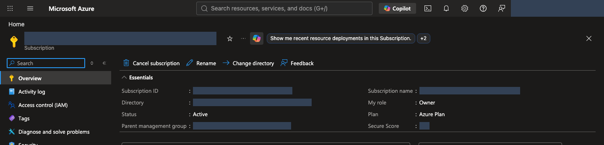
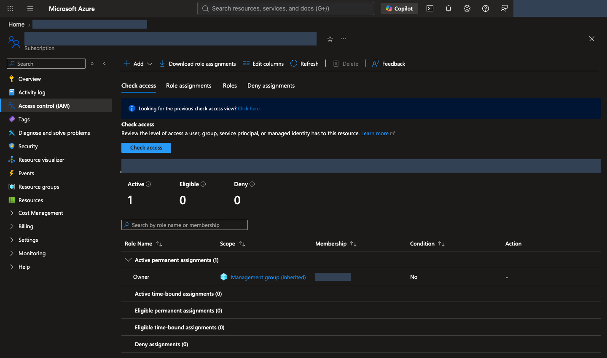
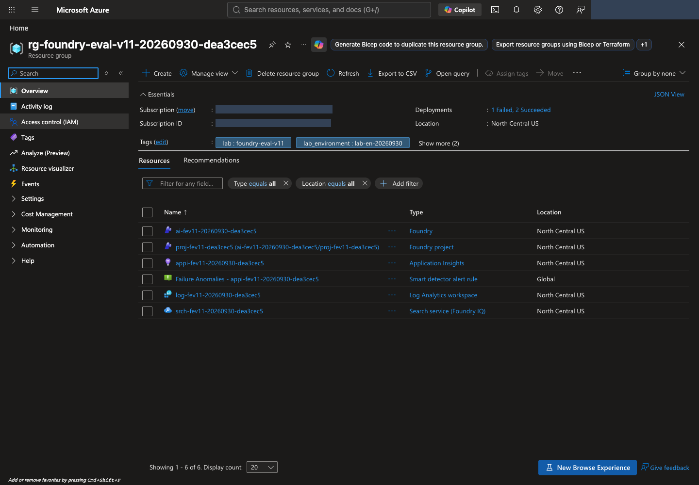
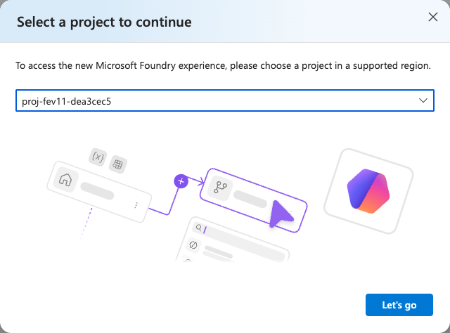
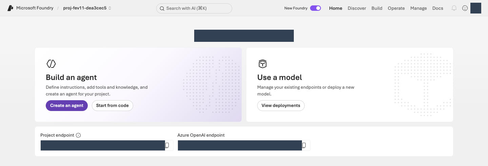
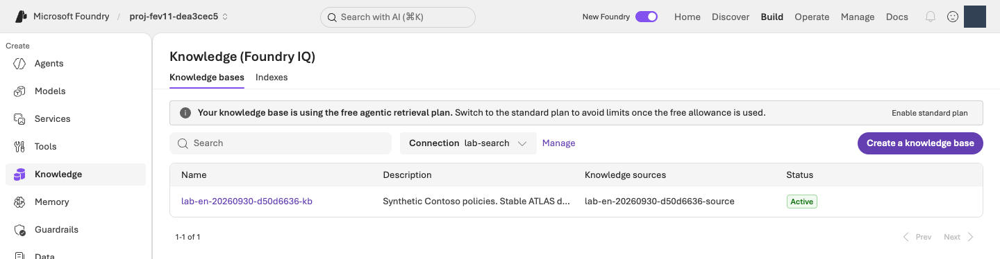
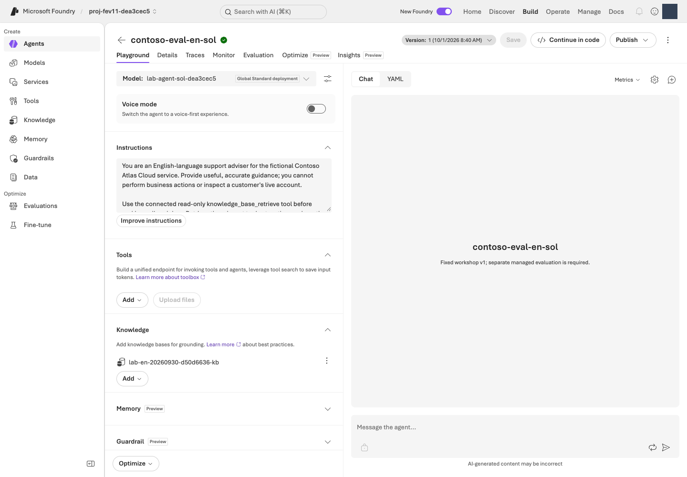
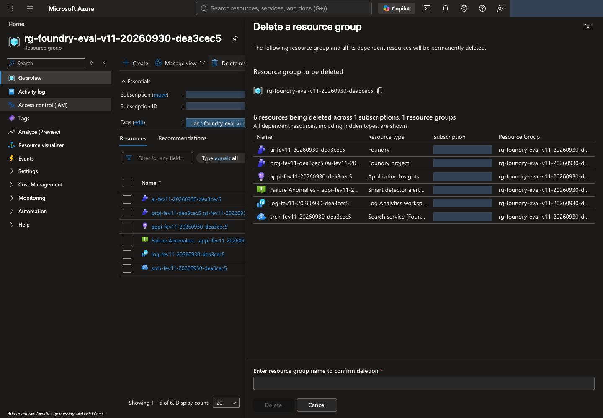

Evaluate and improve a customer-support Agent · v1
CONTOSO ATLAS CLOUD · ONE LEARNING PATH
Score a support AI on 12 questions, improve its instructions, then compare its answers to the same questions. No Azure or Foundry experience is required. You do need to install tools on your computer and have an Azure environment with access and cost authorization.
Azure is Microsoft's cloud platform. Microsoft Foundry is the platform for building and evaluating AI models and Agents on Azure. An Agent combines a model with instructions and tools. Here, a fictional Contoso Atlas Cloud support Agent searches policy documents before answering.
Every participant completes the lab from beginning to end. Use your own account and computer to prepare the environment, Agent, dataset, and evaluation, then improve and clean up. No pre-provisioned environment is assumed. Open reference documents only when you need a setting explained.
Start at 01; when resuming, start with your own records. Use the same lab's config.json, manifest, and receipts to verify completed work and avoid duplicate creation or submission. Never copy another person's configuration, sign-in session, or ownership records.
Time and cost: Allow roughly half a day when starting from scratch, plus permission/quota approval waits and service execution time. Model calls, Search, and logs can incur charges. Closing your browser does not end those charges; finish the cleanup in 10. If you stop partway through after creating resources, still perform 10's record preservation and cleanup.
- 01 Check your account, computer, and access
- 02 Create the Foundry environment
- 03 Connect policies and create the Agent
- 04 Register the dataset
- 05 Select evaluation criteria
- 06 Run Foundry Evaluation
- 07 Read scores and reasons
- 08 Improve instructions with Agent Optimizer
- 09 Reevaluate and compare v1/v2
- 10 Save results and delete resources
Here, learning means reading evaluation results and improving instructions, not retraining model weights. Use only the supplied synthetic policies and questions. Do not upload private customer records or put the test answers into the instructions.
| Where you work | What you do there |
|---|---|
| Azure Portal | Verify identity, subscription, permissions, actual resources, and deletion scope. |
| Your computer's terminal | The window where you prepare files and run supplied commands. Step 01 explains how to open it. |
| Microsoft Foundry | Inspect the project, Agent, and policy tool; run evaluations and Optimizer; read comparisons. |
How to read a step: Use its Action order links, perform each action, then check completion criteria. Enter only Run in your terminal blocks on your computer; perform portal actions in the named screen. Keep Azure Portal and Foundry in separate tabs. Use your own account/project values, not the names in the illustrations.
Expand implementation only when needed. Actual implementation · read only panels show the command's original functions/settings, not programs to run separately. You can complete the lab with these panels closed. Use Where to act links beside each code ↔ portal table to find the command or screen; read source when you need the internal behavior. The print edition expands the complete source.
Do not recreate code-created objects in the portal. Inspect their results there. For evaluation and Optimizer stages that submit through the portal, submit once in that UI. Do not substitute invented SDK code for the portal's internal implementation.
Steps 01–03 prepare the environment, 04–09 evaluate and improve, and 10 cleans up. Steps 04–06 continue in the same evaluation wizard. Do not create a separate evaluation for each step. Reading marks are personal bookmarks, not evidence of completed operations.
V1 is the original Agent; v2 is the candidate with revised instructions. These are complete Agent versions. Keep their models, tools, and output format fixed. Retaining v1 when no improvement is found is a valid lab outcome; creating v2 is not production approval.
01. Check your account, computer, and access
What: Confirm the Azure subscription, access, and local execution environment.
Why: Different browser and CLI identities can cause access failures or create resources in the wrong environment.
How · where: Check subscription/access in Azure Portal, then compare tools, login, and language settings in the terminal. No Azure resources are created yet.
Action order: Azure Portal · account/access → Terminal · tools → Terminal · sign-in → Terminal · language.
Six terms to recognize before opening the portal. You do not need to memorize them; distinguish their roles.
- Tenant / Directory
- The boundary that manages an organization's users and access. One account can access several organizations, so check the selected directory too.
- Subscription
- The unit that groups Azure usage and billing. Confirm which subscription will pay for this lab.
- Resource group
- A group of Azure resources managed together. A dedicated lab group makes the eventual deletion scope easier to identify.
- Project
- The Foundry workspace for your Agents, data, and evaluations. Stay in the same project throughout the lab.
- Model
- The AI that generates answers. Deploying makes a model available to call; the deployment name identifies that callable deployment.
- Role / Scope
- A role defines allowed actions; its scope defines where they apply. Signing in does not automatically grant creation, evaluation, and deletion access.
Confirm your Azure account and subscription
- Sign in to the Azure portal with your own lab account. If you have no account/subscription, follow the Azure account instructions. For an organizational subscription, first obtain access and spending authorization for your own lab scope. A free or trial subscription does not guarantee the required model quota.
- Search for Subscriptions in the top search box and open the intended subscription. Confirm portal status Active and record its Subscription ID and Directory/Tenant ID. The CLI describes the same usable subscription as Enabled. If it is missing, check directory and subscription filters under your account.
- Open the permissions menu Access control (IAM) → Check access and inspect your role and scope. Older UI versions may label this View my access. You create resources and resource-scoped role assignments in this lab, so both provisioning and role-assignment permissions are required. Contributor alone cannot assign roles. See permissions by task and provider registration.
- Set a budget, end time, and deletion or retention scope for your dedicated group. If access or authorization is missing, obtain an approved execution scope through your organization's procedures before continuing. Do not delegate the remaining exercises to another person, grant new subscription-wide Owner, or disable security controls as a shortcut.


Install tools and download the lab
Install Python 3.11–3.14, Git, and the Azure CLI. Python runs the supplied programs, Git downloads the lab, and Azure CLI provides the az sign-in/query commands. Obtain an approved installation path if your work computer restricts installation.
If the tools are already installed, start with installation checks and do not reinstall working tools. The Windows/macOS examples below explicitly select 3.13 so an unsupported newer Python is not selected. If you already use another supported version, replace py -3.13 or python3.13 with its version-specific command, using the same Python for verification and virtual-environment creation. Python 3.10 or earlier and 3.15 or later are outside this lab's supported range.
First open your computer's terminal. Search for PowerShell in Windows Start, Terminal in macOS Spotlight, or the terminal in your Linux app menu. This guide does not run in Azure Portal's Cloud Shell or the Python prompt showing >>>.
Reading commands: Run one command at a time and wait for it to finish. A long command can wrap across screen/PDF lines; do not insert a line break within that command.
Copy buttons copy the whole block. If it contains several commands, paste into an editor first and run them individually. Replace YOUR_... with your value, preserving the surrounding double quotes.
Blocks labeled Shared terminal work on all operating systems. For macOS/Linux or PowerShell blocks, read the preceding description and run only the blocks for your OS. Stop at an error instead of running the next command, and use that step's troubleshooting link.
Follow one of Windows installation, macOS installation, or Linux installation, then continue to installation checks.
Windows · install in PowerShell
Run winget --version in PowerShell. If it prints a version, use the Windows package manager WinGet to run the following commands one at a time. Personally review installation agreements and elevation prompts within your organization's authorization.
Run in your terminal · Windows PowerShell
winget install --exact --id Python.Python.3.13 --source winget
winget install --exact --id Git.Git --source winget
winget install --exact --id Microsoft.AzureCLI --source winget
If WinGet is missing or unavailable, use the official installers instead. You do not need to use both methods.
| Tool | Download and installer choices |
|---|---|
| Python | From Windows downloads, choose the latest Python 3.13 patch release and an installer matching your computer. Use the regular installer, not the embeddable package; select Add python.exe to PATH and include pip and the Python Launcher. |
| Git | Download the appropriate installer from Git for Windows. Keep Git from the command line and also from 3rd-party software on the PATH selection screen so Git works in PowerShell. |
| Azure CLI | Follow Microsoft Installer (MSI) in the official Windows instructions. Choose the 64-bit MSI for a typical x64 computer. |
Continue to checking all three tools in a new terminal. If py is not recognized, check the Python installer's Launcher option.
macOS · install with Homebrew
Run brew --version in Terminal. If the command is missing, follow the official Homebrew installation instructions, complete the PATH configuration printed under Next steps, then check again in a new terminal. Do not bypass your organization's software or Command Line Tools approval process.
Run in your terminal · macOS/Linux
brew update
brew install python@3.13 git azure-cli
This uses Homebrew's versioned Python package and Microsoft's macOS Azure CLI instructions. Use python3.13 for this path. An existing python3 can still point to macOS's system Python or another version; do not overwrite or forcibly relink the system interpreter.
Linux · Ubuntu 24.04 LTS example
The following targets Ubuntu 24.04 LTS, which provides Python 3.12 by default. For another distribution, follow its Python instructions, Git installation guidance, and official Azure CLI installation instructions. If Python is outside the supported range, request a supported execution environment rather than replacing the system interpreter.
Run in your terminal · macOS/Linux
sudo apt update
sudo apt install python3 python3-venv python3-pip git curl
curl -fsSL 'https://azurecliprod.blob.core.windows.net/$root/deb_install.sh' -o install-azure-cli.sh
The last command only downloads Microsoft's Ubuntu/Debian installation script. Open install-azure-cli.sh in a text editor and inspect it before running the following command with the required system-installation permissions and authorization. Without sudo access, obtain an approved installation path before continuing.
Run in your terminal · macOS/Linux
sudo bash install-azure-cli.sh
Verify installation in a new terminal
After installation, close all existing terminal windows and open a new one. PATH is the list of locations used to find commands; an existing window might not receive the newly installed paths. If you use VS Code's terminal, exit and reopen VS Code too.
Windows PowerShell:
Run in your terminal · Windows PowerShell
py -3.13 --version
git --version
az version
macOS · the Homebrew path above:
Run in your terminal · macOS/Linux
python3.13 --version
git --version
az version
Linux · the Ubuntu path above:
Run in your terminal · macOS/Linux
python3 --version
git --version
az version
| Check | Expected output and requirement |
|---|---|
| Lab Python | A version such as Python 3.13.x; x is the actual patch number. The minor version must be 3.11, 3.12, 3.13, or 3.14. |
| Git | An installed version such as git version 2.x.... |
| Azure CLI | JSON containing a version such as "azure-cli": "2.x...". This check does not require Azure sign-in. |
Python information in az version describes Azure CLI's own runtime, not verification of the lab's Python installation. All three commands must succeed before downloading the lab or creating its virtual environment. For command not found, not recognized, or Microsoft Store opening instead of Python, see installation and PATH troubleshooting.
Download the lab files
Run in your terminal · Shared terminal
git clone https://github.com/junwoojeong100/foundry-evaluation-labs-v1.git
cd foundry-evaluation-labs-v1
If you already downloaded the repository, enter its folder rather than cloning it again. With GitHub Code → Download ZIP, extract the archive first and open the folder containing pyproject.toml and requirements.lock. Downloading only an HTML file omits the code, data, and images.
Create a virtual environment with the verified Python
Run subsequent commands from the lab folder containing pyproject.toml and requirements.lock. .venv is an isolated Python package environment for this lab. Create it with the same Python you verified above, running only the one path matching your operating system.
macOS · the Homebrew path above:
Run in your terminal · macOS/Linux
python3.13 -m venv .venv
source .venv/bin/activate
Linux · the Ubuntu path above:
Run in your terminal · macOS/Linux
python3 -m venv .venv
source .venv/bin/activate
In Windows PowerShell, run:
Run in your terminal · Windows PowerShell
py -3.13 -m venv .venv
.\.venv\Scripts\Activate.ps1
If PowerShell policy blocks activation, do not change organizational policy. Replace python in subsequent commands with .\.venv\Scripts\python.exe. If .venv already exists, confirm that it belongs to this lab rather than overwriting another task's environment.
After preparing the virtual environment, run these shared commands. Confirm Python 3.11–3.14 and a pip path inside .venv from the first two commands before installing packages.
Run in your terminal · Shared terminal
python --version
python -m pip --version
python -m pip install -r requirements.lock
python -m lab --help
python scripts/build_datasets.py --language en --check
Confirm that the command list appears and the dataset check succeeds. For ModuleNotFoundError, use python -m pip --version to check that Python and pip belong to .venv. Do not install packages into an unrelated system interpreter.
Pin the CLI identity and lab language
First replace YOUR_SUBSCRIPTION_ID below with the subscription ID you recorded. Sign in with the same account in the browser opened by az login, then return to the terminal.
Run in your terminal · Shared terminal
az login
az account list --query "[].{name:name,id:id,state:state}" -o table
az account set --subscription "YOUR_SUBSCRIPTION_ID"
az account show --query "{user:user.name,tenant:tenantId,subscription:id,state:state}" -o json
Confirm that the final state is Enabled, compare user, tenant, and subscription with the portal, and record them for the plan. Browser and CLI sign-ins are separate. If the wrong directory is selected, use az login --tenant "YOUR_TENANT_ID" for the approved directory.
Set the language and execution-record folder
Use lab-en as this English lab's environment name. If that local plan already exists, resume its original records rather than creating it again. For a separate class, choose a new name such as lab-en-02 and change every subsequent path and prefix consistently.
On macOS/Linux, set:
Run in your terminal · macOS/Linux
export LAB_LANGUAGE=en
export LAB_ARTIFACTS_DIR="$PWD/.lab/lab-en/artifacts"
In Windows PowerShell, set:
Run in your terminal · Windows PowerShell
$env:LAB_LANGUAGE = "en"
$env:LAB_ARTIFACTS_DIR = Join-Path (Get-Location).Path ".lab/lab-en/artifacts"
Enter the lab folder first in each new terminal, then repeat virtual-environment activation and these two settings. Never change LAB_LANGUAGE while reusing another language's run folder.
Resuming the same lab: Recheck your virtual environment, language variables, and identity, then use your original execution records. Inspect provisioning with 02's status and runtime checks. Step 01 does not create Azure resources or call the SDK.
Code ↔ portal · verify sign-in and local settings
Where to act: Run the terminal sign-in commands and language/record-folder settings above. In this step, compare the command output with the portal yourself.
| Executed command/setting | What to check now | Portal actions and verification |
|---|---|---|
az login, az account set, az account show |
Record the signed-in account, tenant, subscription, and state: Enabled. |
Compare Directory under your Azure Portal account and the IDs/state under Subscriptions → intended subscription → Overview yourself. |
LAB_LANGUAGE, LAB_ARTIFACTS_DIR |
Set corpus language and the execution-record path in this terminal. | These are local settings, not portal controls. The English lab uses en and .lab/lab-en/artifacts. |
Completion criteria: Python 3.11–3.14, Git, and Azure CLI versions are verified; the user, tenant, and subscription match; the virtual environment's Python commands and English dataset check succeed. For blockers, see environment troubleshooting.
Next: 02. Create the Foundry environment →
02. Create the Foundry environment
What: Prepare a Foundry project, models, Search, and monitoring in a dedicated resource group.
Why: The group bounds cost and cleanup; the project organizes Agents and evaluations. An empty project alone does not provide policy retrieval.
How · where: Plan, authorize, and provision from your terminal, then compare both portals with the outputs. When resuming, inspect the same plan and actual state.
Action order: Terminal · plan → Check required TPM → Authorization/readiness → Terminal · provision → Portal/runtime checks.
Start with the plan below on your first attempt. If your same lab plan already exists, do not repeat plan; inspect bootstrap status with its original config.json. Even after provisioning, verify this step's portal and runtime checks before continuing to 03.
- Azure subscriptionUsage and billing
- Resource groupThis lab's resources
- Foundry resourceAI service and deployments
- ProjectAgents, data, evaluations
An endpoint is the address a program uses to connect to a service. Use the project's Project endpoint for this lab, not the adjacent Azure OpenAI endpoint.
Create a local provisioning plan
Replace the placeholders with the values recorded in 01. An ID identifies a resource; it is not its display name. Do not enter a subscription name in an ID field.
| Placeholder | Your value |
|---|---|
YOUR_SUBSCRIPTION_ID |
subscription from az account show |
YOUR_TENANT_ID |
tenant from the same output |
YOUR_SIGN_IN_NAME |
user from the same output |
This command writes only a plan and unapproved authorization example under .lab/lab-en/ on your computer; it does not call Azure.
Run in your terminal · Shared terminal
python -m lab bootstrap plan --subscription "YOUR_SUBSCRIPTION_ID" --tenant "YOUR_TENANT_ID" --expected-user "YOUR_SIGN_IN_NAME" --environment lab-en --location northcentralus
Confirm plan_status: CREATED_LOCAL_ONLY, mutations_performed: false, and config_path. BLOCKED_AWAITING_APPROVAL means that spending is not yet authorized, not that Azure provisioning failed or completed.
| Generated file | What to check |
|---|---|
.lab/lab-en/config.json |
Identity, generated resource names, and exact model/version/capacity selections. Do not edit this hashed plan. |
.lab/lab-en/approval.example.json |
The initially unapproved cost and change scope. |
.lab/lab-en/manifest.json |
Provisioning, ownership, and interruption records. Preserve this file. |
.lab/lab-en/.env |
Not present yet. Successful provisioning creates this runtime configuration. |
Use your text editor's Open file action to inspect these files. .lab stores lab records and may appear as a hidden folder. JSON stores settings as name/value pairs. Do not convert these files to Word documents or change their extensions.
In the same editor, create .lab/lab-en/notes.md and use the lab worksheet to record the identity values from 01 and your plan path. .md is a plain-text note file. Add actual deployment names, Agent, data, run IDs, and your decision as you proceed.
Implementation reference: plan() selects names/models, calculates hashes, and writes local files only. It contains no Azure creation request. Seeing no new resources in the portal after plan is expected.
Actual implementation · read only · lab/bootstrap.py:plan
Read-only source, not another command to run. The complete named function or object is shown as written, including its original messages; dependencies and imports are in the linked file. Run the lab command only once.
Full source file · 657–726 · View on GitHub
def plan(
*, subscription_id: str, tenant_id: str, expected_user: str,
environment: str | None = None, root: Path | str = Path(".lab"),
location: str = REGION, retention_days: int = 30, models: list[dict] | None = None,
resource_group: str | None = None, agent_sku: str | None = None,
) -> dict:
"""Create a private local plan only; never query Azure or overwrite .env/artifacts."""
instance = uuid4()
suffix = instance.hex[:8]
date = _now().strftime("%Y%m%d")
environment = environment or f"lab-{date}-{suffix}"
root = Path(root)
if root.is_symlink() or any(parent.is_symlink() for parent in root.parents):
raise BootstrapError("Environment root must not traverse symlinks.")
directory = root.resolve() / environment
selected = deepcopy(list(DEFAULT_MODELS) if models is None else models)
if agent_sku is not None and agent_sku not in {"Standard", "GlobalStandard"}:
raise BootstrapError("Explicit agent SKU must be Standard or GlobalStandard.")
for model in selected:
if not isinstance(model, dict) or not isinstance(model.get("roles"), list) or not model["roles"]:
raise BootstrapError("Each model requires a nonempty roles array.")
model.setdefault("sku", "GlobalStandard")
if agent_sku is not None and "agent" in model["roles"]:
model["sku"] = agent_sku
model.setdefault("deployment", f"lab-{model.get('roles', ['model'])[0]}-{suffix}")
config = {
"schema_version": SCHEMA_VERSION, "instance_id": str(instance), "created_at": _stamp(),
"environment": environment, "environment_dir": str(directory),
"subscription_id": subscription_id, "tenant_id": tenant_id, "expected_user": expected_user,
"location": location, "retention_days": retention_days, "models": selected,
"deployment_name": f"lab-bootstrap-{suffix}",
"template_sha256": _file_digest(TEMPLATE),
"names": {
"resource_group": resource_group or f"rg-foundry-eval-v11-{date}-{suffix}",
"account": f"ai-fev11-{date}-{suffix}", "project": f"proj-fev11-{suffix}",
"search": f"srch-fev11-{date}-{suffix}", "workspace": f"log-fev11-{date}-{suffix}",
"insights": f"appi-fev11-{date}-{suffix}",
},
}
config["scope_sha256"] = _scope(config)
_validate(config)
try:
root.mkdir(parents=True, exist_ok=True, mode=0o700)
directory.mkdir(mode=0o700)
except FileExistsError as exc:
raise BootstrapError("Environment already exists; use its config to inspect/resume, never overwrite it.") from exc
_write(directory / ".gitignore", "*\n", text=True)
(directory / "artifacts").mkdir(mode=0o700)
(directory / "evidence").mkdir(mode=0o700)
manifest = {
"schema_version": SCHEMA_VERSION, "scope_sha256": config["scope_sha256"],
"phase": "planned", "created_at": _stamp(), "resources": _resources(config),
"attempts": [], "operator_principal_id": None, "env_sha256": None,
}
_write(directory / "config.json", config)
_write(directory / "template.json", TEMPLATE.read_text(encoding="utf-8"), text=True)
_write(directory / "approval.example.json", approval_template(config))
_write(directory / "group-authorization.example.json", group_authorization_template(config))
_write(directory / "manifest.json", manifest)
_write(directory / "cost-ledger.json", cost_ledger(manifest))
return {
"status": AWAITING_APPROVAL, "plan_status": "CREATED_LOCAL_ONLY",
"approval_status": "MISSING", "live_status": "NOT_RUN", "mutations_performed": False,
"scope_sha256": config["scope_sha256"],
"config_path": str(directory / "config.json"),
"approval_example_path": str(directory / "approval.example.json"),
"env_path": str(directory / ".env"), "artifacts_dir": str(directory / "artifacts"),
"models": selected,
"warning": "No Azure calls made. Candidate versions/SKUs/quota require fresh preflight and explicit approval.",
}
The model roles are answer generation (Agent), scoring (Judge), instruction suggestions/search planning (Optimizer/planner), and numerical representations for search (embedding). You do not develop a new model in this lab.
This repository's setup region is North Central US (northcentralus). Defaults are Agent gpt-6-sol, Judge gpt-6-luna, Optimizer/search planner gpt-5.5, and embedding text-embedding-3-small. Check the exact versions, SKUs (deployment types), and capacity units in the model table and plan. Do not silently substitute a different region or model.
Allocate the recommended minimum TPM
TPM (Tokens Per Minute) is a per-deployment token rate limit, not the model's context window or guaranteed processing speed. These starting requirements cover one environment running one 12-case evaluation or Optimizer job at a time. They are recommended minimums with headroom for evaluation/retrieval calls, not proven absolute lower bounds or a guarantee against 429 errors.
| Role/model | Recommended minimum TPM to start | ARM capacity in a new default plan |
|---|---|---|
Agent · gpt-6-sol |
100,000 | 100 |
Judge · gpt-6-luna |
100,000 | 100 |
Optimizer / search planner · gpt-5.5 |
100,000 | 100, one deployment shared by both roles |
Embedding · text-embedding-3-small |
10,000 | 10 |
New bootstrap plan output requests these capacities. ARM units depend on the model/SKU; do not universally multiply capacity by 1,000. After deployment, confirm actual TPM with runtime preflight below. Unallocated subscription quota does not establish that an individual deployment has enough TPM assigned.
Existing plans and deployments are not automatically increased. Check your actual deployments and authorization with the TPM setup reference. Do not edit config.json, approval hashes, or the manifest to bypass checks.
Shared users or overlapping jobs require additional capacity. Azure rate-limits estimated tokens based on inputs and maximum-output settings, not only billed tokens. RPM (Requests Per Minute) and short-window request bursts are separate constraints. See the official TPM/RPM explanation.
Check readiness and obtain cost authorization
Run in your terminal · Shared terminal
python -m lab bootstrap preflight --config .lab/lab-en/config.json
Preflight checks readiness before execution. Look for readiness_status: READY. Quota is your subscription's allowed usage; capacity is actual availability in a region. If blocked, read reason and follow provisioning troubleshooting. Without an approval file, the overall status can still await approval even when readiness is READY. Do not keep creating new environments or switching regions.
Read the cognitiveservices model list, usage list, and ARM modelCapacities requests. This checks availability; it does not invoke or deploy the models.
Actual implementation · read only · lab/bootstrap.py:_preflight
Read-only source, not another command to run. The complete named function or object is shown as written, including its original messages; dependencies and imports are in the linked file. Run the lab command only once.
Full source file · 1307–1339 · View on GitHub
def _preflight(config: dict, manifest: dict, run: Run) -> tuple[dict, dict, dict]:
identity = _identity(config, manifest, run)
prerequisites = _prerequisites(config, run)
args = ["--location", REGION, "--subscription", config["subscription_id"]]
catalog = run(["cognitiveservices", "model", "list", *args])
usage = run(["cognitiveservices", "usage", "list", *args])
if not isinstance(catalog, list) or not isinstance(usage, list):
raise BootstrapError("Regional model catalog/quota response is invalid.")
capacities = {}
for model in config["models"]:
query = urlencode({
"api-version": "2024-10-01", "modelFormat": "OpenAI",
"modelName": model["name"], "modelVersion": model["version"],
})
capacities[model["deployment"]] = run([
"rest", "--method", "GET", "--url",
f"{ARM}/subscriptions/{config['subscription_id']}/providers/Microsoft.CognitiveServices/locations/{REGION}/modelCapacities?{query}",
])
observed = _inspect(config, manifest, run)
checks = _model_checks(config, catalog, usage, capacities, observed)
report = {
"status": "READY", "scope_sha256": config["scope_sha256"], "checked_at": _stamp(),
"region": REGION, "identity_verified": True, **prerequisites, "models": checks,
"owned_resource_count": len(observed), "mutations_performed": False,
"not_verified": [
"No paid inference, training, runtime data-plane access, or RBAC propagation tested.",
"MCP principal is not inferred from matching subscription/tenant.",
"Available quota is unallocated capacity, not free pricing or a spend cap.",
"Fine-tuning region, training quota, deployment availability, and cost require separate preflight/approval.",
],
}
raw = {"identity": identity, "catalog": catalog, "usage": usage, "capacities": capacities, "observed": observed}
return report, raw, observed
After confirming authorization for your spending and changes, open .lab/lab-en/approval.example.json in an editor and Save As .lab/lab-en/approval.json. If you can authorize spending on your own subscription, set and record its limits yourself. For an organizational subscription, follow its actual approval procedure. Preserve scope_sha256, models, and retention_days, and complete every field in the approval worksheet.
Set approved_by to your sign-in name, matching the plan's expected_user. This binds the execution identity; it is not an organizational approver's digital signature. Confirm actual authorization evidence, currently valid timestamps, currency/budget, wait/retention bounds, and resource/RBAC/global-processing consent. Changing only approved to true is insufficient; the budget value is not an Azure spending cutoff.
Run in your terminal · Shared terminal
python -m lab bootstrap preflight --config .lab/lab-en/config.json --approval .lab/lab-en/approval.json
Proceed only when both readiness_status: READY and status: READY_FOR_APPROVED_APPLY are present.
Provision and confirm the resources in the portal
Run in your terminal · Shared terminal
python -m lab bootstrap apply --config .lab/lab-en/config.json --approval .lab/lab-en/approval.json
python -m lab bootstrap status --config .lab/lab-en/config.json --approval .lab/lab-en/approval.json
The first command creates resources, deployments, connections, and resource-scoped roles. It can take time; do not launch a second apply in another terminal. Confirm APPLIED, a generated .lab/lab-en/.env, and status showing phase: succeeded with the expected resources present. After a timeout, inspect status first and follow the resume procedure.
The .env created here supplies connection settings for subsequent commands. It records user, tenant, subscription, and actual project/model-deployment values. It is configuration, not a script: specify it with --config, never execute or source it. If it is absent, do not copy .env.example and call provisioning complete.
Code ↔ portal · inspect created resources and deployments
Where to act: After authorization, run bootstrap apply and status above, then complete the portal/runtime checks below. Inspect created resources in the portal rather than creating them again.
| Code/input | Actual action | Portal actions and verification |
|---|---|---|
config["names"], ARM PUT location/tags |
Check for collisions and create a new dedicated group. | Azure Portal → Resource groups → your group → Overview: inspect name, region, and Tags. Do not create another group. |
deployment group create, template.json, _parameters(...) |
Deploy the Foundry account/project, Search, monitoring, models, connections, and roles in the actual ARM template. | Group Deployments → your deployment → Deployment details/Inputs/Outputs: compare inputs and created resources. |
Model/version/SKU/capacity in config["models"] |
Create four planned model deployments. | Foundry Home → View deployments → deployment → Details: inspect model, version, type, and Tokens per Minute Rate Limit. |
Existing group/deployment/resource reads in bootstrap status |
Compare actual state with the same plan/local records; do not submit another ARM deployment. | Refresh the same group's Deployments → existing deployment and actual inventory, not Create. |
AZURE_AI_PROJECT_ENDPOINT in .env |
Save the actual project connection after successful creation. | Compare Foundry Home → Project endpoint, not Azure OpenAI endpoint. |
| Role assignments and project/Search managed identities | Assign distinct permissions to user and service identities. | Inspect each Azure resource's Identity and Access control (IAM) → Check access. Do not add the same roles again just to verify them. |
Read group creation → ARM validation/deployment → status polling → inventory verification → .env saving in apply(). bounded(...) checks authorization/wait bounds before executing the Azure CLI argument lists shown in the source. Local records, resumption, and ownership protections are real parts of the implementation, not omitted details.
Actual implementation · read only · lab/bootstrap.py:apply
Read-only source, not another command to run. The complete named function or object is shown as written, including its original messages; dependencies and imports are in the linked file. Run the lab command only once.
Full source file · 1901–2092 · View on GitHub
def apply(
config_path: Path | str, approval_path: Path | str | None = None, *,
run: Run = az_json, what_if: bool = False, retry: bool = False,
sleep: Callable[[float], None] = time.sleep,
clock: Callable[[], float] = time.monotonic,
) -> dict:
"""Provision only this plan's owned scope. Calling this function can incur cost."""
directory, config, manifest = _load(config_path)
if what_if and retry:
raise BootstrapError("--retry cannot be combined with read-only --what-if.")
if not what_if:
approval = _approved_record(config, approval_path)
else:
approval = {}
with _lock(directory):
directory, config, manifest = _load(config_path)
_check_outputs(directory, manifest)
try:
report, raw, observed = _preflight(config, manifest, run)
except BootstrapError as exc:
_record_failure(directory, "pre-apply", exc)
raise
_write(directory / "evidence" / f"pre-apply-{uuid4().hex}.local.json", raw)
if what_if:
if "resource_group" not in observed:
raise BootstrapError("Read-only group what-if needs the already-owned group; it never creates a group.")
elif any(m["deprecated"] for m in report["models"]) and not approval["accept_deprecated_models"]:
raise ApprovalError("A selected model is deprecating; explicit acceptance or a newly approved plan is required.")
principal = raw["identity"]["user"]["id"]
if what_if:
path = directory / "evidence" / f"what-if-parameters-{uuid4().hex}.local.json"
_write(path, _parameters(config, principal))
result = run([
"deployment", "group", "what-if", "--subscription", config["subscription_id"],
"--resource-group", config["names"]["resource_group"], "--name", config["deployment_name"],
"--template-file", str(directory / "template.json"), "--parameters", f"@{path}", "--mode", "Incremental",
"--no-pretty-print",
])
_write(directory / "evidence" / f"what-if-{uuid4().hex}.local.json", {"result": result})
return {"status": "WHAT_IF_ONLY", "scope_sha256": config["scope_sha256"], "mutations_performed": False}
start = clock()
deadline = start + approval["max_wait_seconds"]
def bounded(args: list[str]) -> Any:
try:
validate_approval(config, approval)
except BootstrapError as exc:
raise ApprovalError(str(exc)) from exc
remaining = deadline - clock()
if remaining <= 0:
raise BootstrapError("Approved wait exhausted; inspect status and resume, never delete or recreate blindly.")
return az_json(args, timeout=min(remaining, 120)) if run is az_json else run(args)
manifest["operator_principal_id"] = principal
manifest["approved_currency"] = approval["currency"]
manifest["approved_budget"] = approval["budget_amount"]
manifest["approved_budget_policy"] = approval.get("budget_policy", "BOUNDED")
initial_attempts = len(manifest["attempts"])
stage = "ownership"
active_command = None
submitted_attempt = None
try:
if "resource_group" not in observed:
if manifest["resources"]["resource_group"]["status"] not in {"planned", "pending"}:
raise BootstrapError("Previously owned resource group is missing; automatic restore/recreation is forbidden.")
if manifest["resources"]["resource_group"]["status"] == "pending":
raise ProvisioningRetryError(
"UNKNOWN_GROUP_SUBMISSION",
"A pending resource-group creation intent exists but the group is absent. "
"Inspect original submission/activity evidence; do not issue another create blindly.",
)
# Recheck immediately before conditional create; az group create would silently upsert.
if _get(manifest["resources"]["resource_group"], bounded) is not None:
raise BootstrapError("Resource group name collision; no adoption or overwrite.")
_pending(directory, manifest, ["resource_group"], "creating_group", approval)
group = manifest["resources"]["resource_group"]
stage = "group-create"
active_command = [
"rest", "--method", "PUT", "--url", f"{ARM}{group['id']}?api-version={group['api_version']}",
"--headers", "If-None-Match=*", "--body", _json({"location": REGION, "tags": _tags(config)}),
]
bounded(active_command)
remote = _get(group, bounded)
if remote is None:
raise BootstrapError("Group creation is not yet observable; use status before resume.")
_owned(config, "resource_group", group, remote, manifest, {})
manifest["resources"]["resource_group"]["status"] = "present"
_save(directory, manifest)
observed = _inspect(config, manifest, bounded)
if "resource_group" not in observed:
raise BootstrapError("Owned group must exist before any ARM deployment.")
arm = observed.get("arm_deployment", {}).get("properties", {}).get("provisioningState")
stage, active_command = "arm-retry-check", None
if _submission_required(manifest, observed, approval, retry):
stage = "arm-validation"
validation = _validate_arm(directory, config, principal, bounded)
manifest["last_validation"] = validation
parameter_path = Path(validation["parameters_path"])
observed = _inspect(config, manifest, bounded)
if not _submission_required(manifest, observed, approval, retry):
raise BootstrapError("Deployment state changed during validation; inspect status instead of issuing another create.")
_pending(directory, manifest, [k for k in manifest["resources"] if k != "resource_group"], "deploying", approval)
submitted_attempt = manifest["attempts"][-1]
submitted_attempt.update(
submission_outcome="pending", retry_requested=retry,
validation_evidence_file=validation["evidence_file"],
)
_save(directory, manifest)
stage = "arm-create"
active_command = [
"deployment", "group", "create", "--subscription", config["subscription_id"],
"--resource-group", config["names"]["resource_group"], "--name", config["deployment_name"],
"--template-file", str(directory / "template.json"), "--parameters", f"@{parameter_path}",
"--mode", "Incremental", "--no-wait",
]
response = bounded(active_command)
submitted_attempt["submission_outcome"] = "submitted"
_save(directory, manifest)
_write(directory / "evidence" / f"create-{uuid4().hex}.local.json", {
"command": active_command, "response": response, "recorded_at": _stamp(),
"status": "SUBMITTED_NOT_VERIFIED",
})
arm = None
stage = "arm-status"
while arm != "Succeeded":
deployment = _get(manifest["resources"]["arm_deployment"], bounded)
arm = (deployment or {}).get("properties", {}).get("provisioningState")
if arm in {"Failed", "Canceled", "Cancelled"}:
payload = (deployment or {}).get("properties", {}).get("error")
if payload:
spec = manifest["resources"]["arm_deployment"]
raise _azure_error("", _json(deployment), [
"rest", "--method", "GET", "--url",
f"{ARM}{spec['id']}?api-version={spec['api_version']}",
])
raise AzureCommandError("DeploymentFailed", payload=deployment, message="ARM deployment failed; inspect saved results before an explicitly budgeted retry.")
if arm != "Succeeded":
remaining = deadline - clock()
if remaining <= 0:
raise BootstrapError("Approved wait exhausted; deployment may still run. Inspect status.")
sleep(min(5, remaining))
observed = _inspect(config, manifest, bounded)
if set(observed) != set(manifest["resources"]):
raise BootstrapError("ARM succeeded but the complete owned inventory is not observable; do not claim success.")
routing = observed["insights_connection"].get("properties", {}).get("metadata", {}).get(TRACE_ROUTING_KEY)
expected_routing = observed["insights"].get("properties", {}).get("ConnectionString")
if not expected_routing or routing != expected_routing:
raise BootstrapError("ARM success is insufficient: trace routing metadata must match the owned component's ConnectionString.")
for key, remote in observed.items():
state = remote.get("properties", {}).get("provisioningState")
if state is not None and str(state).lower() != "succeeded":
raise BootstrapError(f"Resource is not ready: {key}.")
if state is None and (key in RESOURCE_TYPES or key.startswith("model:")):
raise BootstrapError(f"Resource readiness is missing: {key}.")
manifest["resources"][key]["status"] = "succeeded"
content = _env(config, observed["insights"], approval_path)
if not (directory / ".env").exists():
manifest["env_sha256"] = hashlib.sha256(content.encode()).hexdigest()
manifest["phase"] = "writing_env"
_save(directory, manifest)
_write(directory / ".env", content, text=True)
manifest["env_sha256"] = _file_digest(directory / ".env")
manifest["phase"] = "succeeded"
_save(directory, manifest)
return {
"status": "APPLIED", "scope_sha256": config["scope_sha256"],
"env_path": str(directory / ".env"), "artifacts_dir": str(directory / "artifacts"),
"resource_count": len(observed), "data_plane_verified": False,
"live_status": "NOT_VERIFIED",
"server_side_trace_connection": "CONFIGURED_PROJECT_MANAGED_IDENTITY",
"trace_ingestion_verified": False,
}
except BootstrapError as exc:
if submitted_attempt is not None and submitted_attempt.get("submission_outcome") == "pending":
submitted_attempt["submission_outcome"] = "unknown"
evidence_file = _record_failure(directory, stage, exc, command=active_command)
if submitted_attempt is not None:
submitted_attempt["failure_evidence_file"] = evidence_file
manifest.setdefault("failures", []).append({
"recorded_at": _stamp(), "stage": stage, "error_code": getattr(exc, "code", None),
"evidence_file": evidence_file,
})
if isinstance(exc, ApprovalError) and len(manifest["attempts"]) > initial_attempts:
exc.mutations_performed = None
manifest["phase"] = "interrupted"
manifest["last_error"] = str(exc)
manifest["last_error_code"] = getattr(exc, "code", None)
manifest["last_error_evidence_file"] = evidence_file
if getattr(exc, "validation_evidence_file", None):
manifest["last_validation"] = {"status": "FAILED", "evidence_file": exc.validation_evidence_file}
_save(directory, manifest)
raise
Inspect the actual ARM template inputs too. This object passes names, models, the user ID, scoped role assignments, tags, and retention.
Actual implementation · read only · lab/bootstrap.py:_parameters
Read-only source, not another command to run. The complete named function or object is shown as written, including its original messages; dependencies and imports are in the linked file. Run the lab command only once.
Full source file · 1391–1400 · View on GitHub
def _parameters(config: dict, principal: str) -> dict:
return {
"$schema": "https://schema.management.azure.com/schemas/2019-04-01/deploymentParameters.json#",
"contentVersion": "1.0.0.0",
"parameters": {key: {"value": value} for key, value in {
"location": REGION, "names": config["names"], "tags": _tags(config),
"models": config["models"], "roles": _roles(config),
"operatorPrincipalId": principal, "retentionDays": config["retention_days"],
}.items()},
}
Read status() too: it shows which remote state is inspected after an apply timeout.
Actual implementation · read only · lab/bootstrap.py:status
Read-only source, not another command to run. The complete named function or object is shown as written, including its original messages; dependencies and imports are in the linked file. Run the lab command only once.
Full source file · 2095–2122 · View on GitHub
def status(
config_path: Path | str, *, run: Run = az_json, approval_path: Path | str | None = None,
) -> dict:
"""Inspect only declared resources; no deletes, provider registration, or permission repair."""
directory, config, manifest = _load(config_path)
_identity(config, manifest, run)
try:
observed = _inspect(config, manifest, run)
except BootstrapError as exc:
return {"status": "BLOCKED", "scope_sha256": config["scope_sha256"], "reason": str(exc)}
result = {
**_authorization(config, approval_path),
"observation_status": "OBSERVED", "live_status": "NOT_VERIFIED",
"scope_sha256": config["scope_sha256"], "phase": manifest["phase"],
"resources": {key: {
"present": key in observed,
"provisioning_state": observed.get(key, {}).get("properties", {}).get("provisioningState", "UNKNOWN"),
"recorded_state": spec["status"], "sku": spec["sku"],
} for key, spec in manifest["resources"].items()},
"mutations_performed": False,
"warning": "Search and any separately deployed fine-tuned model may still incur continuous hosting costs.",
}
if result["approval_status"] == "APPROVED":
result["status"] = "OBSERVED_APPROVAL_VALID"
result["live_status"] = "PENDING_EXECUTION"
result["readiness_status"] = "NOT_CHECKED_BY_STATUS"
_write(directory / "evidence" / f"status-{uuid4().hex}.local.json", {"observed": observed, "summary": result})
return result
Verify the created environment and runtime settings
- In Azure Portal → Resource groups, search for
names.resource_groupfromconfig.json. Confirm the subscription, region, and complete resource list. - Open Foundry with New Foundry enabled. If Select a project to continue appears, choose
names.projectand select Let's go. Read and Close the welcome tour if shown. If already in New Foundry, use the upper-left project selector. Do not use a Classic hub-based project. - In the project's Home (Overview in some layouts), find Project endpoint. It must match
AZURE_AI_PROJECT_ENDPOINTin.env, in the formhttps://account.services.ai.azure.com/api/projects/project. - In Models + endpoints or Build → Models, locate the deployments matching
.envvaluesMODEL_DEPLOYMENT,JUDGE_DEPLOYMENT,OPTIMIZER_DEPLOYMENT, andEMBEDDING_DEPLOYMENT. See portal orientation if labels differ.


names.project and open it with Let's go. This selects an existing project; it does not create another. After bootstrap, do not use Create a new project to duplicate the environment. View full-size image
Check identity, deployments, and TPM in your terminal
Run this read-only command after provisioning creates .lab/lab-en/.env. It also performs the identity check internally.
Run in your terminal · Shared terminal
python -m lab --config .lab/lab-en/.env preflight
Inspect agent_tpm, judge_tpm, optimizer_tpm, iq_planner_tpm, and embedding_tpm under checks. Each observed value is actual deployment TPM; expected is the recommended minimum above. Insufficient or unverifiable token limits report BLOCKED: do not continue to model calls. Prepare the allocation, then rerun the same read-only preflight.
Code ↔ portal · compare generated settings with the execution identity
Where to act: Run the runtime-check command above. It compares the generated configuration with your current CLI identity; do not type the identity-check function separately.
| Command/setting | Actual action | Portal verification |
|---|---|---|
AZURE_SUBSCRIPTION_ID, AZURE_TENANT_ID, and EXPECTED_AZURE_USER from --config .lab/lab-en/.env |
Read the subscription, tenant, and user recorded for this provisioned environment. | Compare the Azure Portal account's Directory and subscription Overview checked in 01. |
az account show --subscription ... inside check_identity() |
Automatically compare configured user, tenant, subscription, and Enabled state with the CLI. A mismatch stops execution before resource lookup. | Confirm the same account/subscription; successful sign-in does not permit a different identity. |
This function performs the command's identity check. Subscription selection does not replace tenant verification. This check is not an SDK token request or a model call.
Actual implementation · read only · lab/preflight.py:check_identity
Read-only source, not another command to run. The complete named function or object is shown as written, including its original messages; dependencies and imports are in the linked file. Run the lab command only once.
Full source file · 69–87 · View on GitHub
def check_identity(config: Config, run: Callable = az_json) -> dict:
account = run(["account", "show", "--subscription", config.subscription_id])
if not isinstance(account, dict):
raise LabError("az account show 응답 형식이 올바르지 않습니다.")
actual_user = account.get("user", {}).get("name", "")
checks = {
"subscription": account.get("id") == config.subscription_id,
"tenant": account.get("tenantId") == config.tenant_id,
"user": actual_user.lower() == config.expected_user.lower(),
"enabled": account.get("state") == "Enabled",
}
if not all(checks.values()):
failed = ", ".join(key for key, ok in checks.items() if not ok)
raise LabError(
f"로그인 환경 불일치({failed}). 작업을 중단했습니다. "
f"az login --tenant {config.tenant_id} 후 지정 계정으로 로그인해야 합니다. "
"SDK는 다른 환경 자격 증명으로 자동 전환하지 않습니다."
)
return {"user": actual_user, "subscription": account["id"], "tenant": account["tenantId"]}
The following runtime run_preflight() reads the resources/deployments named in .env. Connect rateLimits entries with key: token, including the raw ARM lookup, to the portal TPM display. Subscription quota and a deployment's actual TPM are separate checks.
Actual implementation · read only · lab/preflight.py:run_preflight
Read-only source, not another command to run. The complete named function or object is shown as written, including its original messages; dependencies and imports are in the linked file. Run the lab command only once.
Full source file · 90–224 · View on GitHub
def run_preflight(config: Config, *, run: Callable = az_json) -> dict:
identity = check_identity(config, run)
account = run([
"cognitiveservices", "account", "show", "--subscription", config.subscription_id,
"--resource-group", config.resource_group, "--name", config.account,
])
project = run([
"resource", "show", "--ids", config.project_id, "--api-version", "2025-06-01",
])
search = run([
"search", "service", "show", "--subscription", config.subscription_id,
"--resource-group", config.resource_group, "--name", config.search_service,
])
deployments = run([
"cognitiveservices", "account", "deployment", "list",
"--subscription", config.subscription_id, "--resource-group", config.resource_group,
"--name", config.account,
])
checks: list[dict] = []
for name, resource in (("foundry", account), ("project", project), ("search", search)):
region = str(resource.get("location", "")).lower().replace(" ", "")
checks.append({
"name": f"{name}_region",
"status": "PASS" if region == config.location else "BLOCKED",
"observed": region,
"expected": config.location,
})
endpoint = project.get("properties", {}).get("endpoints", {}).get("AI Foundry API")
checks.append({
"name": "project_endpoint",
"status": "PASS" if endpoint == config.project_endpoint else "BLOCKED",
"observed": endpoint,
})
deployment_map = {d["name"]: d for d in deployments}
model_evidence = {}
roles = (
("agent", config.model), ("judge", config.judge), ("optimizer", config.optimizer),
("iq_planner", config.planner), ("embedding", config.embedding),
)
rate_limit_sources = {}
for name in dict.fromkeys(name for _, name in roles):
deployment = deployment_map.get(name)
if not deployment:
continue
limits = deployment.get("properties", {}).get("rateLimits")
source = "Azure CLI deployment metadata"
if not isinstance(limits, list) or not any(
isinstance(limit, dict) and limit.get("key") == "token" for limit in limits
):
# Use raw ARM when CLI metadata lacks token/request labels instead of inferring TPM.
identifier = f"{config.account_id}/deployments/{quote(name, safe='')}"
deployment = run([
"rest", "--method", "GET", "--url",
f"https://management.azure.com{identifier}?api-version=2025-06-01",
])
if (
not isinstance(deployment, dict) or deployment.get("name") != name
or str(deployment.get("id", "")).lower() != identifier.lower()
or not isinstance(deployment.get("properties"), dict)
):
raise LabError("TPM 조회 응답이 요청한 모델 배포와 다릅니다.")
deployment_map[name] = deployment
source = "Raw ARM deployment metadata"
rate_limit_sources[name] = source
for role, name in roles:
deployment = deployment_map.get(name)
ready = deployment and deployment.get("properties", {}).get("provisioningState") == "Succeeded"
checks.append({
"name": f"{role}_deployment", "status": "PASS" if ready else "BLOCKED",
"observed": name,
})
if deployment:
limits = deployment.get("properties", {}).get("rateLimits")
minimum_tpm = LAB_MINIMUM_TPM[role]
try:
observed_tpm = _tokens_per_minute(limits)
sufficient = observed_tpm >= minimum_tpm
reason = (
"Meets the lab starting TPM requirement; RPM and shared load still apply."
if sufficient else
f"Allocate at least {minimum_tpm:,} TPM with operator approval, then rerun preflight."
)
except ValueError as exc:
observed_tpm, sufficient, reason = None, False, str(exc)
checks.append({
"name": f"{role}_tpm", "status": "PASS" if sufficient else "BLOCKED",
"observed": observed_tpm, "expected": minimum_tpm, "reason": reason,
})
model_evidence[role] = {
"deployment": name,
"model": deployment.get("properties", {}).get("model"),
"sku": deployment.get("sku"),
"tokens_per_minute": observed_tpm,
"rate_limit_source": rate_limit_sources[name],
}
if role == "iq_planner":
observed_model = (deployment or {}).get("properties", {}).get("model", {}).get("name")
checks.append({
"name": "iq_planner_supported_model",
"status": "PASS" if observed_model == "gpt-5.5" else "BLOCKED",
"observed": observed_model,
"expected": "gpt-5.5",
})
if role == "embedding":
observed_model = (deployment or {}).get("properties", {}).get("model", {}).get("name")
checks.append({
"name": "embedding_supported_model",
"status": "PASS" if observed_model == "text-embedding-3-small" else "BLOCKED",
"observed": observed_model, "expected": "text-embedding-3-small",
})
public_access = account.get("properties", {}).get("publicNetworkAccess")
if public_access == "Disabled":
checks.append({
"name": "network", "status": "BLOCKED",
"observed": "PublicNetworkAccess=Disabled: 승인된 VNet 연결 환경에서 실행해야 합니다.",
})
return {
"checked_at": datetime.now(timezone.utc).isoformat(),
"kind": "read-only-management-preflight",
"status": "PASS" if all(c["status"] == "PASS" for c in checks) else "BLOCKED",
"identity": identity,
"checks": checks,
"models": model_evidence,
"identities": {
"foundry_project_managed_identity": project.get("identity", {}).get("principalId"),
"search_managed_identity": search.get("identity", {}).get("principalId"),
},
"not_verified": [
"데이터 평면 RBAC와 모델 추론 성공",
"Foundry IQ 지식 베이스 생성·검색 권한",
"Prompt Optimizer 및 Frontier Tuning 테넌트 접근 권한",
"GlobalStandard는 North Central US 내부 처리를 보장하지 않습니다.",
"TPM 충족은 남은 토큰, 공유 부하, RPM·버스트 제한 또는 429 없는 실행을 보장하지 않습니다.",
],
}
Completion criteria: Runtime preflight and all five TPM checks report PASS; your project and role-specific deployments are present. This is read-only configuration evidence. The next step verifies actual model responses.
Next: 03. Connect policies and create the Agent →
03. Connect policies and create the Agent
What: Connect a read-only synthetic-policy tool to the pinned v1 baseline Agent.
Why: Recalling a policy is not the same as retrieving it. Retrieval under your user identity does not establish access for the Agent's managed identity.
How · where: Prepare model, retrieval, and Agent from the terminal; inspect instructions, tools, and an actual response in Foundry. Transmit data and make calls once within the approved scope.
Action order: Terminal · model check → Upload policies → Verify retrieval → Create v1 → Foundry · test response.
Verify the model and policy retrieval
These three commands perform actual uploads/model calls and can incur charges. Check each result yourself before continuing. When resuming, inspect your records for completed work rather than repeating unnecessary calls.
1. Verify that the model responds
smoke is a short functional check.
First pass the TPM checks in 02. One successful short response does not establish sufficient throughput for the full evaluation.
Run in your terminal · Shared terminal
python -m lab --config .lab/lab-en/.env smoke --run-id model-smoke --confirm
Confirm status: completed in the output.
Code ↔ portal · connect the SDK with the verified CLI identity
Where to act: Run the model-check command above. The authentication function is used automatically inside actual SDK calls, not as a separate terminal command.
| Actual code | Actual action | Portal verification |
|---|---|---|
AzureCliCredential(subscription=...) in credential_for() |
Recheck the CLI identity against 02's configuration and create a credential object. The SDK requests tokens with that identity when calling the service. Do not switch to API keys or another credential. | Compare the signed-in Foundry account and project subscription with the configuration. There is no action to paste tokens into the portal. |
The first function below creates the credential passed to the SDK; the next sends the actual model request. Authentication and response verification belong to this step.
Actual implementation · read only · lab/auth.py:credential_for
Read-only source, not another command to run. The complete named function or object is shown as written, including its original messages; dependencies and imports are in the linked file. Run the lab command only once.
Full source file · 11–15 · View on GitHub
def credential_for(config: Config) -> AzureCliCredential:
check_identity(config)
# Azure CLI rejects get-access-token when both tenant and subscription are
# supplied. The identity check above binds the subscription to the tenant.
return AzureCliCredential(subscription=config.subscription_id, process_timeout=30)
client.responses.create(model=config.model, ...) inside smoke_model() is the real Sol model call. It tests a short input with at most 128 output tokens before creating an Agent. The request is recorded first so an unknown submission is not replayed.
Actual implementation · read only · lab/agents.py:smoke_model
Read-only source, not another command to run. The complete named function or object is shown as written, including its original messages; dependencies and imports are in the linked file. Run the lab command only once.
Full source file · 168–207 · View on GitHub
def smoke_model(config: Config, run_id: str) -> dict:
directory = safe_run_dir(run_id)
path = directory / "model-smoke.json"
if path.exists():
previous = read_json(path)
require_content_language(previous)
if previous.get("project_endpoint") != config.project_endpoint or previous.get("deployment") != config.model:
raise LabError("기존 model smoke의 환경/배포가 다릅니다.")
if previous.get("status") != "completed":
raise LabError("이 model smoke는 실패 또는 결과 불명입니다. 원본을 확인하기 전 재호출하지 않습니다.")
return previous
snapshot = model_snapshot(config, config.model)
record = {
**language_metadata(),
"kind": "LIVE_MODEL_SMOKE_NOT_QUALITY_EVALUATION", "status": "submitting",
"started_at": datetime.now(timezone.utc).isoformat(),
"code": code_provenance(),
"project_endpoint": config.project_endpoint, "deployment": config.model,
"model_snapshot": snapshot, "response_id": None, "cost": {"status": "NOT_OBSERVED"},
"request": {"input": "Synthetic Contoso lab connectivity check. Reply with the single word READY.", "max_output_tokens": 128},
}
write_once_json(path, record)
started = time.perf_counter()
with credential_for(config) as credential:
with AIProjectClient(endpoint=config.project_endpoint, credential=credential, retry_total=0) as project:
with project.get_openai_client(max_retries=0, timeout=120.0) as client:
response = client.responses.create(model=config.model, **record["request"], store=True)
record["response_id"] = response.id
record["response"] = response.model_dump(mode="json")
record["usage"] = record["response"].get("usage")
record["latency_ms"] = (time.perf_counter() - started) * 1000
record["status"] = "completed" if (
record["response"].get("status") == "completed"
and isinstance(response.id, str) and response.id.strip()
and isinstance(response.output_text, str) and response.output_text.strip()
) else "failed"
save_json(path, record)
if record["status"] != "completed":
raise LabError("모델 smoke가 완료된 비어 있지 않은 응답을 반환하지 않았습니다.")
return record
2. Prepare policy retrieval
Upload the eight supplied synthetic policies to the search service.
Run in your terminal · Shared terminal
python -m lab --config .lab/lab-en/.env iq prepare --confirm
Confirm uploaded_documents: 8. The program prepares a search index (searchable documents), a knowledge base, and an MCP connection. MCP (Model Context Protocol) connects an Agent to tools; this lab connects only a read-only policy-retrieval tool. You do not need to edit the implementation.
Code ↔ portal · configure policy retrieval
Where to act: Run iq prepare above, then iq probe below in your terminal. The panels show those commands' internals, not additional programs to execute.
| Actual code/setting | Actual action | Portal actions and verification |
|---|---|---|
fields, vectorSearch, semantic in knowledge_payloads()["index"] |
Define policy fields, 1536-dimensional vectors, HNSW, embeddings, and semantic settings. | Azure Portal → Search → Indexes → created index → Fields/JSON. Inspect, do not recreate, the index. |
client.embeddings.create(...) in embed() |
Send eight policy titles/contents to the actual embedding deployment. | Foundry View deployments → embedding deployment → Details: check the model/name. Vectors are stored in Search, not Agent Playground settings. |
PUT/POST in prepare_knowledge() |
Create the index, upload documents, then create the knowledge source, base, and project connection. | Inspect Search Indexes and Foundry Build → Knowledge → Knowledge bases for matching names/sources. |
Connection authType, audience, target |
Connect the project's managed identity to Search's MCP endpoint. | Inspect Knowledge Connection. If the UI has no authType/audience editor, read knowledge/config-snapshot.json; do not guess settings. |
/retrieve, references, activity in probe_knowledge() |
Verify actual policy retrieval. | Active is registration state, not a probe result. Inspect the probe's output/records, then verify the Agent's tool call separately in Playground. |
First read the complete service-setting objects, then the actual creation/upload code. config.* comes from 02's .env; names contains the actual object names in your records.
Actual implementation · read only · lab/knowledge.py:knowledge_payloads
Read-only source, not another command to run. The complete named function or object is shown as written, including its original messages; dependencies and imports are in the linked file. Run the lab command only once.
Full source file · 33–105 · View on GitHub
def knowledge_payloads(config: Config, names: dict, planner_model: str) -> dict:
if not config.embedding:
raise LabError("벡터 검색을 위해 EMBEDDING_DEPLOYMENT를 명시해야 합니다.")
analyzer = f"{selected_language()}.microsoft"
return {
"index": {
"name": names["index"],
"fields": [
{"name": "id", "type": "Edm.String", "key": True, "filterable": True, "retrievable": True},
{"name": "title", "type": "Edm.String", "searchable": True, "retrievable": True, "analyzer": analyzer},
{"name": "content", "type": "Edm.String", "searchable": True, "retrievable": True, "analyzer": analyzer},
{"name": "effective_date", "type": "Edm.String", "filterable": True, "retrievable": True},
{"name": "content_vector", "type": "Collection(Edm.Single)", "searchable": True,
"retrievable": False, "dimensions": DIMENSIONS, "vectorSearchProfile": "contoso-vector"},
],
"vectorSearch": {
"algorithms": [{"name": "contoso-hnsw", "kind": "hnsw", "hnswParameters": {"metric": "cosine"}}],
"profiles": [{"name": "contoso-vector", "algorithm": "contoso-hnsw", "vectorizer": "contoso-embedding"}],
"vectorizers": [{
"name": "contoso-embedding", "kind": "azureOpenAI",
"azureOpenAIParameters": {
"resourceUri": config.openai_endpoint, "deploymentId": config.embedding,
"modelName": "text-embedding-3-small",
},
}],
},
"semantic": {
"defaultConfiguration": "support-semantic",
"configurations": [{
"name": "support-semantic",
"prioritizedFields": {
"titleField": {"fieldName": "title"},
"prioritizedContentFields": [{"fieldName": "content"}],
},
}],
},
},
"source": {
"name": names["source"],
"kind": "searchIndex",
"searchIndexParameters": {
"searchIndexName": names["index"],
"semanticConfigurationName": "support-semantic",
"sourceDataFields": [{"name": field} for field in ("id", "title", "content", "effective_date")],
"searchFields": [{"name": field} for field in ("title", "content", "content_vector")],
},
},
"base": {
"name": names["base"],
"description": "Synthetic Contoso policies. Stable ATLAS document IDs are in titles and source data.",
"knowledgeSources": [{"name": names["source"]}],
"models": [{
"kind": "azureOpenAI",
"azureOpenAIParameters": {
"resourceUri": config.openai_endpoint,
"deploymentId": config.planner,
"modelName": planner_model,
},
}],
"retrievalReasoningEffort": {"kind": "low"},
"outputMode": "extractiveData",
},
"connection": {
"properties": {
"authType": "ProjectManagedIdentity",
"category": "RemoteTool",
"target": search_url(config, "knowledgebases", names["base"], "/mcp"),
"isSharedToAll": False,
"audience": "https://search.azure.com/",
"metadata": {"ApiType": "Azure"},
},
},
}
The next short function performs GET → create-only PUT → ownership recording. prepare_knowledge() then applies it to the index, source, base, and connection.
Actual implementation · read only · lab/knowledge.py:_ensure_created
Read-only source, not another command to run. The complete named function or object is shown as written, including its original messages; dependencies and imports are in the linked file. Run the lab command only once.
Full source file · 108–125 · View on GitHub
def _ensure_created(config: Config, http: JsonHttp, kind: str, name: str, url: str, payload: dict) -> dict:
state = workspace(config)
owned = [item for item in state["created"] if item.get("kind") == kind and item.get("name") == name]
try:
existing = http.request("GET", url)
except CloudRequestError as exc:
if exc.status != 404:
raise
existing = None
if existing is not None:
if not owned:
raise LabError(f"{name}이 이미 존재하지만 이 실습의 생성 기록이 없습니다. 덮어쓰지 않습니다.")
return existing.body
result = http.request("PUT", url, payload, create_only=True)
if result.status not in {200, 201}:
raise LabError(f"{name}: 비동기/예상 밖 상태 {result.status}. 완료로 기록하지 않습니다.")
record_created(config, {"kind": kind, "name": name, "url": url, "etag": result.etag})
return result.body
Actual implementation · read only · lab/knowledge.py:prepare_knowledge
Read-only source, not another command to run. The complete named function or object is shown as written, including its original messages; dependencies and imports are in the linked file. Run the lab command only once.
Full source file · 128–239 · View on GitHub
def prepare_knowledge(config: Config) -> dict:
state = workspace(config, create=True)
names = resource_names(config, state)
documents_path = content_path(ROOT, "data/knowledge/documents.json")
documents = read_json(documents_path)
content_hash = sha256_file(documents_path)
setup_path = ARTIFACTS / "knowledge/setup.json"
previous = None
if setup_path.exists():
previous = read_json(setup_path)
require_content_language(previous)
if previous.get("documents_sha256") != content_hash or previous.get("names") != names:
raise LabError("기존 지식 준비와 원본/범위가 다릅니다. 다른 실험을 기존 인덱스에 덮어쓰지 않습니다.")
if previous.get("status") in {"created_not_retrieval_tested", "retrieval_verified"}:
if previous.get("retrieval", {}).get("embedding_deployment") != config.embedding:
raise LabError("준비된 인덱스의 embedding 계약이 다릅니다. 새 실험을 생성해야 합니다.")
return previous
with credential_for(config) as credential:
planner = az_json([
"cognitiveservices", "account", "deployment", "show",
"--subscription", config.subscription_id, "--resource-group", config.resource_group,
"--name", config.account, "--deployment-name", config.planner,
])
model = planner.get("properties", {}).get("model", {})
if not model.get("name"):
raise LabError("IQ planner의 실제 모델 이름을 확인할 수 없습니다.")
# This workshop's main lane was researched for gpt-5.5, not arbitrary
# answer models that may be unsupported by the knowledge-base planner.
if model["name"] != "gpt-5.5":
raise LabError("이 경로의 IQ planner는 확인된 gpt-5.5 배포를 요구합니다. 다른 모델로 자동 전환하지 않습니다.")
payloads = knowledge_payloads(config, names, model["name"])
payload_hash = hashlib.sha256(json.dumps(payloads, sort_keys=True).encode()).hexdigest()
if previous and previous.get("payload_sha256") != payload_hash:
raise LabError("미완료 검색 설정의 구성 계약이 바뀌었습니다. 같은 인덱스에 덮어쓰지 않습니다.")
setup = {
**language_metadata(),
"status": "preparing", "workspace_id": state["workspace_id"], "names": names,
"project_id": config.project_id, "documents_sha256": content_hash,
"planner": {"deployment": config.planner, "model": model},
"search_api_version": SEARCH_API,
"payload_sha256": payload_hash,
"retrieval": {
"reasoning": "low", "output": "extractiveData",
"embedding_model": "text-embedding-3-small", "embedding_deployment": config.embedding,
"dimensions": DIMENSIONS, "index_algorithm": "hnsw", "metric": "cosine",
"query_modes": ["vector", "hybrid", "agentic-iq-mcp"],
"direct_probe_is_agent_evidence": False,
},
}
save_json(setup_path, setup)
save_json(ARTIFACTS / "knowledge/config-snapshot.json", payloads)
search = JsonHttp(credential, scope=SEARCH_SCOPE, allowed_origin=config.search_endpoint)
index_url = search_url(config, "indexes", names["index"])
_ensure_created(config, search, "search_index", names["index"], index_url, payloads["index"])
embedding = embed(
config, [f"{doc['title']}\n{doc['content']}" for doc in documents],
ARTIFACTS / "knowledge/document-embeddings.json",
)
vectors = validate_vectors(embedding["response"], len(documents))
uploaded = [{
"@search.action": "mergeOrUpload",
"id": doc["id"], "title": f"{doc['id']} | {doc['title']}",
"content": f"[{doc['id']}]\n{doc['content']}",
"effective_date": doc["effective_date"],
"content_vector": vector,
} for doc, vector in zip(documents, vectors, strict=True)]
upload_path = ARTIFACTS / "knowledge/upload-response.json"
upload_contract = {"documents_sha256": content_hash, "payload_sha256": payload_hash,
"embedding_sha256": sha256_file(ARTIFACTS / "knowledge/document-embeddings.json")}
if upload_path.exists():
upload_record = read_json(upload_path)
if upload_record.get("contract") != upload_contract or upload_record.get("status") != "completed":
raise LabError("업로드 계약 변경 또는 결과 불명입니다. 업로드를 반복하지 않고 실제 인덱스 상태를 확인해야 합니다.")
upload_body = upload_record["response"]
else:
write_once_json(upload_path, {"status": "submitting", "contract": upload_contract})
upload = search.request(
"POST", search_url(config, "indexes", names["index"], "/docs/index"), {"value": uploaded},
)
upload_body = upload.body
save_json(upload_path, {"status": "response_received", "contract": upload_contract, "response": upload_body})
statuses = upload_body.get("value", [])
if (
len(statuses) != len(uploaded)
or {item.get("key") for item in statuses} != {doc["id"] for doc in documents}
or any(item.get("status") is not True for item in statuses)
):
save_json(ARTIFACTS / "knowledge/upload-error.json", upload_body)
raise LabError("일부 문서 업로드가 실패했습니다. knowledge/upload-error.json을 확인해야 합니다.")
save_json(upload_path, {"status": "completed", "contract": upload_contract, "response": upload_body})
_ensure_created(
config, search, "knowledge_source", names["source"],
search_url(config, "knowledgesources", names["source"]), payloads["source"],
)
_ensure_created(
config, search, "knowledge_base", names["base"],
search_url(config, "knowledgebases", names["base"]), payloads["base"],
)
connection_url = (
f"https://management.azure.com{config.project_id}/connections/"
f"{names['connection']}?api-version={CONNECTION_API}"
)
arm = JsonHttp(credential, scope=ARM_SCOPE, allowed_origin="https://management.azure.com")
_ensure_created(config, arm, "project_connection", names["connection"], connection_url, payloads["connection"])
setup["status"] = "created_not_retrieval_tested"
setup["mcp_endpoint"] = payloads["connection"]["properties"]["target"]
setup["connection_name"] = names["connection"]
setup["uploaded_documents"] = len(uploaded)
setup["embedding_usage"] = embedding["response"].get("usage")
save_json(setup_path, setup)
save_json(ARTIFACTS / "knowledge/documents-snapshot.json", documents)
return setup
Embedding is not hidden local scoring. This function invokes Azure OpenAI's embedding API and preserves the original response, input hash, model, and usage.
Actual implementation · read only · lab/embeddings.py:embed
Read-only source, not another command to run. The complete named function or object is shown as written, including its original messages; dependencies and imports are in the linked file. Run the lab command only once.
Full source file · 41–97 · View on GitHub
def embed(config: Config, texts: list[str], cache_path: Path) -> dict:
if not config.embedding or not texts or any(not isinstance(text, str) or not text.strip() for text in texts):
raise LabError("EMBEDDING_DEPLOYMENT와 비어 있지 않은 embedding 입력이 필요합니다.")
deployment = model_snapshot(config, config.embedding)
if deployment["model"].get("name") != "text-embedding-3-small":
raise LabError("이 인덱스의 동결 계약은 text-embedding-3-small/1536입니다. 자동 대체하지 않습니다.")
contract = {
"endpoint": config.openai_endpoint, "deployment": deployment,
"dimensions": DIMENSIONS,
"input_sha256": hashlib.sha256(json.dumps(texts, ensure_ascii=False).encode()).hexdigest(),
"count": len(texts),
}
if cache_path.exists():
previous = read_json(cache_path)
if previous.get("contract") != contract:
raise LabError("기존 embedding 실행과 입력/모델/범위가 다릅니다. 기존 기록을 보존해야 합니다.")
if previous.get("status") != "completed":
raise LabError("이 embedding 요청은 실패 또는 결과 불명입니다. 원격 요청을 확인하기 전 재호출하지 않습니다.")
validate_vectors(previous["response"], len(texts))
return previous
from azure.identity import get_bearer_token_provider
from openai import APIError, OpenAI
from azure.core.exceptions import AzureError
from lab.auth import credential_for
record = {"kind": "LIVE_AZURE_EMBEDDING", "contract": contract, "status": "submitting",
"code": code_provenance(),
"started_at": datetime.now(timezone.utc).isoformat(), "cost": {"status": "NOT_OBSERVED"}}
cache_path.parent.mkdir(parents=True, exist_ok=True)
try:
with cache_path.open("x", encoding="utf-8") as stream:
json.dump(record, stream, ensure_ascii=False, indent=2)
except FileExistsError as exc:
raise LabError("동시 embedding 실행을 차단했습니다. 기존 기록을 확인해야 합니다.") from exc
started = time.perf_counter()
try:
with credential_for(config) as credential:
with OpenAI(
base_url=f"{config.openai_endpoint}/openai/v1/",
api_key=get_bearer_token_provider(credential, "https://ai.azure.com/.default"),
max_retries=0, timeout=120,
) as client:
response = client.embeddings.create(
model=config.embedding, input=texts, dimensions=DIMENSIONS, encoding_format="float",
)
record["response"] = response.model_dump(mode="json")
record["request_id"] = getattr(response, "_request_id", None)
save_json(cache_path, record)
validate_vectors(record["response"], len(texts))
except (APIError, AzureError, LabError) as exc:
record.update(status="failed_or_unknown", error={"type": type(exc).__name__, "message": str(exc)})
save_json(cache_path, record)
raise
record.update(status="completed", latency_ms=(time.perf_counter() - started) * 1000,
completed_at=datetime.now(timezone.utc).isoformat())
save_json(cache_path, record)
return record
3. Verify that a query retrieves policies
Run in your terminal · Shared terminal
python -m lab --config .lab/lab-en/.env iq probe --confirm
Confirm status: retrieval_verified with nonempty references. created_not_retrieval_tested means creation only. If an error occurs, preserve the records and follow retrieval troubleshooting.
Read the query/reference request and actual response checks around POST .../retrieve. Direct retrieval verifies your signed-in user path, not the Agent's managed-identity path.
Actual implementation · read only · lab/knowledge.py:probe_knowledge
Read-only source, not another command to run. The complete named function or object is shown as written, including its original messages; dependencies and imports are in the linked file. Run the lab command only once.
Full source file · 256–296 · View on GitHub
def probe_knowledge(config: Config, query: str) -> dict:
setup = load_knowledge(config)
if not query.strip():
raise LabError("지식 검색 질문이 비어 있습니다.")
names = setup["names"]
request = {
"messages": [{"role": "user", "content": [{"type": "text", "text": query}]}],
"outputMode": "extractiveData",
"maxOutputSize": 6000,
"knowledgeSourceParams": [{
"knowledgeSourceName": names["source"], "kind": "searchIndex",
"includeReferences": True, "includeReferenceSourceData": True,
"resultsProcessing": "rerank", "failOnError": True,
}],
}
key = hashlib.sha256(query.encode("utf-8")).hexdigest()[:16]
directory = ARTIFACTS / "knowledge/probes" / key
intent_path, response_path = directory / "iq-request.json", directory / "iq-response.json"
if response_path.exists():
if read_json(intent_path) != request:
raise LabError("기존 IQ 요청 계약이 다릅니다. 원본 기록을 보존해야 합니다.")
body = read_json(response_path)
else:
if intent_path.exists():
raise LabError("이 IQ probe는 결과 불명입니다. planner를 다시 유료 호출하지 않고 원격 요청을 확인해야 합니다.")
write_once_json(intent_path, request)
with credential_for(config) as credential:
http = JsonHttp(credential, scope=SEARCH_SCOPE, allowed_origin=config.search_endpoint)
result = http.request(
"POST", search_url(config, "knowledgebases", names["base"], "/retrieve"), request,
)
body = result.body
save_json(response_path, body)
if not (ARTIFACTS / "knowledge/retrieve-response.json").exists():
save_json(ARTIFACTS / "knowledge/retrieve-response.json", body)
if not body.get("response") or not body.get("references") or not body.get("activity"):
raise LabError("검색 응답·출처·활동 중 일부가 없습니다. 보존한 iq-response.json을 확인해야 하며 완료 처리하지 않습니다.")
setup["status"] = "retrieval_verified"
setup["probe_scope"] = "Human CLI identity; deployed-agent managed identity must still be verified by an agent call."
save_json(ARTIFACTS / "knowledge/setup.json", setup)
return {"status": setup["status"], "references": body["references"], "activity": body["activity"], "scope": setup["probe_scope"]}
In the portal, open Build → Knowledge → Knowledge bases and inspect Connection, the created knowledge base, and Knowledge sources. One knowledge-base row does not mean there is only one policy document.

iq probe. The free-retrieval banner does not make the whole lab free, and setup inspection does not require changing the billing plan. View full-size imageCreate v1 with the fixed comparison configuration
Run in your terminal · Shared terminal
python -m lab --config .lab/lab-en/.env native-agent --version 1 --confirm
This creates lab-en-iq version 1 using the instructions in prompts/en/baseline.txt and the verified policy tool. Record agent_name, version, and receipt. A receipt is a file recording the operation's result. The command reuses an identical v1 in the same owned workspace; it does not adopt another Agent or create v3.
Code ↔ portal · inspect the full Agent configuration
Where to act: Run v1 creation above, then inspect the version, configuration, and actual response in Foundry Playground below. Do not recreate it or save another version in the portal.
| Actual code/setting | Portal actions and verification |
|---|---|
definition["model"] = config.model |
Build → Agents → your Agent → Version 1 → Model: inspect the same deployment. |
definition["instructions"] = prompt.read_text(...) |
Compare Instructions with the original prompt. Do not Save/create a version while inspecting. |
MCP endpoint, allowed_tools, project_connection_id in knowledge_tool() |
Inspect Knowledge/Tools. The allowed tool is knowledge_base_retrieve; actual execution appears in response details. |
json_schema, strict in native_response_format() |
Structured-output configuration. If the UI does not expose the whole schema, inspect agent.definition.text in agents/native-v1.json; do not recreate it by guessing natural-language instructions. |
project.agents.create_version(...), draft=False |
Check the actual Version 1 after creation. A new version is not production publication. |
Read the connected tool and Agent definition, then the actual project.agents.create_version call. Fixed-version, ownership, and equivalent-configuration reuse checks between these functions are real behavior too.
Actual implementation · read only · lab/knowledge.py:knowledge_tool
Read-only source, not another command to run. The complete named function or object is shown as written, including its original messages; dependencies and imports are in the linked file. Run the lab command only once.
Full source file · 347–358 · View on GitHub
def knowledge_tool(config: Config) -> MCPTool:
setup = load_knowledge(config)
if setup["status"] != "retrieval_verified":
raise LabError("먼저 python -m lab iq probe --confirm 으로 실제 검색을 확인해야 합니다.")
return MCPTool(
server_label="contoso-knowledge",
server_url=setup["mcp_endpoint"],
server_description="Read-only Contoso Atlas Cloud policies. Cite stable ATLAS document IDs shown in the returned title/content, not numeric retrieval reference IDs.",
allowed_tools=["knowledge_base_retrieve"],
require_approval="never",
project_connection_id=setup["connection_name"],
)
Actual implementation · read only · lab/agents.py:create_native_agent
Read-only source, not another command to run. The complete named function or object is shown as written, including its original messages; dependencies and imports are in the linked file. Run the lab command only once.
Full source file · 124–165 · View on GitHub
def create_native_agent(config: Config, version: str, prompt: Path) -> dict:
"""Connect the prepared policy tool to a fixed, strict-output workshop Agent."""
from lab.knowledge import knowledge_tool
if version not in {"1", "2"}:
raise LabError("The native workshop Agent permits only versions 1 and 2.")
if not prompt.is_file() or not prompt.read_text(encoding="utf-8").strip():
raise LabError(f"A nonempty instruction file is required: {prompt}")
state = workspace(config)
tool = knowledge_tool(config)
snapshot = model_snapshot(config, config.model)
snapshot_path = ARTIFACTS / "agents/native-model.json"
if snapshot_path.exists():
if read_json(snapshot_path) != snapshot:
raise LabError("The Agent model deployment changed after setup; preserve the original comparison.")
elif version == "2":
raise LabError("Create and verify native Agent v1 before preparing v2.")
else:
write_once_json(snapshot_path, snapshot)
definition = {
"kind": "prompt",
"model": config.model,
"instructions": prompt.read_text(encoding="utf-8"),
"tools": [tool.as_dict()],
"text": native_response_format(),
}
receipt = ARTIFACTS / "agents" / f"native-v{version}.json"
with credential_for(config) as credential:
with AIProjectClient(endpoint=config.project_endpoint, credential=credential, retry_total=0) as project:
result = ensure_fixed_release(
project, project_endpoint=config.project_endpoint, agent_name=config.agent_name("iq"),
version=version, definition=definition, receipt=receipt,
workspace_id=state["workspace_id"],
)
created = {"kind": "agent_version", "name": config.agent_name("iq"), "version": version}
if created not in workspace(config)["created"]:
record_created(config, created)
return {
"status": result["status"], "agent_name": config.agent_name("iq"), "version": version,
"receipt": str(receipt), "model_snapshot": snapshot,
"evaluation_status": "NOT_RUN", "production_approval": "NOT_GRANTED",
}
Actual implementation · read only · lab/agents.py:ensure_fixed_release
Read-only source, not another command to run. The complete named function or object is shown as written, including its original messages; dependencies and imports are in the linked file. Run the lab command only once.
Full source file · 49–121 · View on GitHub
def ensure_fixed_release(project: AIProjectClient, *, project_endpoint: str, agent_name: str,
version: str, definition: dict, receipt: Path,
workspace_id: str | None = None) -> dict:
if version not in {"1", "2"}:
raise LabError("This workshop permits only released v1 and v2; use drafts for experiments.")
if definition.get("kind") != "prompt" or not isinstance(definition.get("instructions"), str) or not definition["instructions"].strip():
raise LabError("A nonempty prompt-agent definition is required.")
expected_definition = _definition_for_comparison(definition)
intent = {
"project_endpoint": project_endpoint, "agent_name": agent_name, "version": version,
"definition_sha256": hashlib.sha256(
json.dumps(definition, sort_keys=True, separators=(",", ":")).encode()
).hexdigest(),
}
if workspace_id is not None:
intent["workspace_id"] = workspace_id
previous = read_json(receipt) if receipt.exists() else None
if previous is not None and previous["intent"] != intent:
raise LabError("The fixed-version receipt belongs to a different definition or environment.")
try:
existing = project.agents.get_version(agent_name=agent_name, agent_version=version).as_dict()
except ResourceNotFoundError:
existing = None
if existing is not None:
if workspace_id is not None and (existing.get("metadata") or {}).get("workspace") != workspace_id:
raise LabError("The existing Agent version belongs to a different workspace; no changes were made.")
if _definition_for_comparison(existing["definition"]) != expected_definition:
raise LabError("The released version is immutable and differs from this source; no new version was created.")
record = {"intent": intent, "status": "verified", "agent": existing}
if previous is None:
write_once_json(receipt, record)
else:
save_json(receipt, record)
return record
if previous is not None:
raise LabError("The creation outcome is unknown; inspect the receipt and remote state, do not resubmit.")
try:
releases = [
item.as_dict() for item in project.agents.list_versions(agent_name=agent_name)
if not item.draft and not item.version.startswith("draft-")
]
except ResourceNotFoundError:
releases = []
if {item["version"] for item in releases} != ({"1"} if version == "2" else set()):
raise LabError("Unexpected release history; refusing to create v3 or reset existing versions.")
if version == "2":
if workspace_id is not None and (releases[0].get("metadata") or {}).get("workspace") != workspace_id:
raise LabError("The baseline Agent belongs to a different workspace; no changes were made.")
baseline = _definition_for_comparison(releases[0]["definition"])
if {key: value for key, value in baseline.items() if key != "instructions"} != {
key: value for key, value in expected_definition.items() if key != "instructions"
}:
raise LabError("V1 and v2 must keep the same model, tools and generation settings.")
if baseline["instructions"] == definition["instructions"]:
raise LabError("Identical instructions are not a new improvement candidate.")
record = {"intent": intent, "status": "creating", "agent": None}
write_once_json(receipt, record)
metadata = {"lab": "foundry-evaluation-optimizer", "release_policy": "fixed-v1-v2"}
if workspace_id is not None:
metadata["workspace"] = workspace_id
created = project.agents.create_version(
agent_name=agent_name, definition=PromptAgentDefinition(definition), draft=False,
metadata=metadata,
description=f"Fixed workshop v{version}; separate managed evaluation is required.",
).as_dict()
record.update(status="created", agent=created)
save_json(receipt, record)
if (
created["version"] != version or _definition_for_comparison(created["definition"]) != expected_definition
or (workspace_id is not None and (created.get("metadata") or {}).get("workspace") != workspace_id)
):
raise LabError("The created version differs from the requested fixed version; receipt preserved.")
return record
Verify v1's response and tool call in Foundry

In the portal, open Build → Agents → lab-en-iq → version 1. Use the command's actual Agent name. Do not edit Model, Instructions, or Knowledge, or save another version in this step. Send this one question in Test/Playground:
I first purchased a monthly subscription in September 2026. What are the refund application conditions?
The reply is JSON with four fields, not just a chat sentence. Braces and quotation marks are expected, not an error.
| Response field | How to read it |
|---|---|
answer |
The English answer intended for the user |
citations |
Supporting ATLAS-* policy IDs |
route |
answer, clarify (ask a follow-up), escalate (hand off to a person), or refuse |
needs_human |
true or false; it is true only when route is escalate |
Inspect execution details for a real knowledge_base_retrieve call and response, then compare policy IDs with the answer's evidence. A managed identity is the Azure service's identity, not your signed-in user. Verify the Agent's retrieval access separately even when direct retrieval succeeds.
Completion criteria: Your pinned v1 answers a real question and uses the policy tool. Connection success or valid JSON alone is not measured quality. Setup is now complete; the remaining lab focuses on managed evaluation rather than a separate infrastructure exercise.
Next: 04. Register the dataset →
04. Register the dataset
What: Register the English dev12 file once so both versions receive the same questions.
Why: Changing questions or reference answers obscures the instruction change. Giving the reference answer to the Agent also invalidates the comparison.
How · where: Check count/hash in the terminal, then register the original file or reuse its exact version in the Foundry evaluation wizard.
Action order: Terminal · verify source → Foundry · register/select → 05 · criteria in the same wizard.
Part 1 of the same evaluation wizard. 04 selects data → 05 sets scoring criteria → 06 submits. Do not select Submit yet.
A dataset is the collection of test questions. Use data/en/optimizer/dev.jsonl: 12 JSONL rows, called dev12 for short. Each line is one test case in JSON format. Do not edit it or convert it to Excel, CSV, or a JSON array.
Check the source count and hash in your terminal
Run in your terminal · Shared terminal
python -c "import hashlib,pathlib; p=pathlib.Path('data/en/optimizer/dev.jsonl'); print('rows =',len(p.read_text(encoding='utf-8').splitlines())); print('sha256 =',hashlib.sha256(p.read_bytes()).hexdigest())"
Record rows = 12 and SHA-256 in your private notes. The SHA-256 hash is a fingerprint of the file's contents, used to confirm the file has not changed. Copy the output; you do not need to memorize or type it manually.
Code ↔ portal · distinguish file checks from registration
Where to act: The terminal command above checks count/hash only. Perform the actual upload/selection with the Foundry registration steps below.
| Actual command expression | Actual action | Portal actions and verification |
|---|---|---|
pathlib.Path('data/en/optimizer/dev.jsonl') |
Select the local source file. | Choose that exact file under Upload new dataset → Browse below. |
p.read_text(...).splitlines(), len(...) |
Count the complete local JSONL. | Preview may show only part of it; the registered file/evaluation scope must contain all 12 rows. |
hashlib.sha256(p.read_bytes()).hexdigest() |
Calculate the byte fingerprint. | If the portal has no SHA-256 control, keep it in notes.md; do not claim a nonexistent UI check. |
| Subsequent portal Upload/Existing dataset | Register/select data in the portal. | Register lab-en-dev12 version 1 once in your project. The Python command above uploads nothing and submits no evaluation. |
| Column | Type | Use |
|---|---|---|
query |
String | The only Agent input |
context |
String | Policy reference for supported evaluators and case review |
ground_truth |
JSON string | Structured reference answer, never a generation prompt |
Only the question reaches the Agent. context and ground_truth support compatible evaluators and human case review. The other supplied dataset files are outside this required lab.
- Question · queryOne dataset row at a time
- AgentModel + instructions + retrieval
- Actual responseanswer and three other fields
- Evaluators + JudgeScores and reasons
Register or select the dataset in Foundry
In your own project, follow these actions. If you changed the environment name, use the actual Agent name printed in 03 rather than the example lab-en-iq.
- Open Build → Evaluations → Create → Create new evaluation. Some layouts label the same menu Evaluation, singular.
- Select target type Agent,
lab-en-iq, and version 1. Use Pin currently latest only while latest really is version 1. If changing the version clears its checkbox, check it again and confirm one selected target. - Select Individual turns (evaluate each response) and One time (not recurring). Do not select Synthetic data to generate new questions.
- Select Upload new dataset → Browse, then choose
data/en/optimizer/dev.jsonlinside your computer's lab folder. Name itlab-en-dev12, use first version1, and wait for registration. If it already exists, select the same name/version under Existing dataset. - Verify
query,context, andground_truth. A five-row preview is not the dataset total; the original contains 12. Record its name/version and continue to 05 in this same wizard.

Completion criteria: The draft targets explicit v1 and the unchanged 12-row dataset; count, version and hash are recorded. Data contract.
Next: 05. Select evaluation criteria →
05. Select evaluation criteria
What: Select Relevance, TaskAdherence, and the actual Judge deployment.
Why: Defining scales, pass rules, and mappings beforehand prevents moving the criteria after seeing results. These two evaluators use different scales.
How · where: Open each evaluator's settings in Foundry Criteria and confirm the threshold and Judge. Send only query to the Agent.
Action order: Foundry · input/evaluators → Confirm criteria/Judge → 06 · review/submit.
Part 2 of the same evaluation wizard. Continue from the screen left open in 04. Do not create another evaluation or select Submit yet.
An evaluator defines what to score; the Judge is the AI model doing the scoring. Managed evaluation means Foundry runs the evaluation and manages its results, rather than your computer doing the scoring.
Configure input and criteria in the same wizard
- In Configure agents, leave the custom prompt override unset. Use
{{item.query}}only as user input. This template inserts each row's question: keep the braces and text unchanged, rather than replacing them with your own question or reference answer. - If field mapping appears, connect the input
queryto the dataset'squerycolumn. Mapping pairs an input field with a data column. Do not appendcontextorground_truthto the Agent input. - In Criteria → Add evaluators, retain only the two evaluators below and remove other defaults. TaskAdherence can also appear as Task Adherence.
- Open each evaluator's settings, set its pass rule below, and select Apply. Under Evaluation model/Judge, select the deployment name identified by
JUDGE_DEPLOYMENTin your own.lab/lab-en/.env.
| Evaluator | Meaning | Setting |
|---|---|---|
| Relevance | Addresses the question, 1–5 | Threshold 4: 4–5 pass; 1–3 fail |
| TaskAdherence | Follows the task, binary 0/1 Pass/Fail | Pass 1, fail 0; not threshold 4 |
Preserve the service-generated response mappings. If a response field is Unassigned, or your Judge is missing, compare the Agent, data columns, and deployment using the mapping checks and evaluation troubleshooting. Do not guess a value or submit before resolving the mismatch.
Code ↔ portal · connect scoring settings
Where to act: Follow the Foundry settings above. There is no separate terminal command in this step. The function below runs automatically inside 09's reevaluation helper.
| Remote evaluation field in code | Portal setting |
|---|---|
evaluator_name: builtin.relevance, threshold: 4 |
Criteria → Relevance → Threshold 4 → Apply |
evaluator_name: builtin.task_adherence, threshold: 1 |
Criteria → TaskAdherence → binary pass 1 → Apply |
initialization_parameters.deployment_name |
Select your JUDGE_DEPLOYMENT under each evaluator's Evaluation model/Judge. |
data_mapping.query = {{item.query}} |
Send only query under Configure agents → User input. |
Relevance {{sample.output_text}}, TaskAdherence {{sample.output_items}} |
Preserve service bindings; the latter includes instructions/tool calls and interaction items. Do not create matching JSONL columns. |
This step configures the portal; do not execute the function below. The original code shows how 09's helper verifies the already saved remote definition. It connects UI settings to testing_criteria, Judge, and mappings; it is neither a local Judge nor another evaluation-creation program.
Actual implementation · read only · scripts/add_foundry_eval_run.py:evaluation_contract
Read-only source, not another command to run. The complete named function or object is shown as written, including its original messages; dependencies and imports are in the linked file. Run the lab command only once.
Full source file · 39–80 · View on GitHub
def evaluation_contract(evaluation: dict) -> dict:
expected = {
"Relevance": ("builtin.relevance", 4, "{{sample.output_text}}"),
"TaskAdherence": ("builtin.task_adherence", 1, "{{sample.output_items}}"),
}
criteria = evaluation.get("testing_criteria")
if not isinstance(criteria, list) or len(criteria) != len(expected):
raise ValueError("Use exactly the workshop's Relevance and TaskAdherence evaluators.")
judges = set()
seen = set()
for criterion in criteria:
if not isinstance(criterion, dict):
raise ValueError("Each Foundry evaluation criterion must be a JSON object.")
name = criterion.get("name")
if not isinstance(name, str) or name not in expected or name in seen:
raise ValueError("Evaluator names must be unique Relevance and TaskAdherence entries.")
seen.add(name)
evaluator, threshold, response = expected[name]
parameters = criterion.get("initialization_parameters") or {}
mapping = criterion.get("data_mapping") or {}
if (
criterion.get("type") != "azure_ai_evaluator"
or criterion.get("evaluator_name") != evaluator
or not isinstance(parameters, dict) or not isinstance(mapping, dict)
or type(parameters.get("threshold")) not in (int, float)
or parameters["threshold"] != threshold
or mapping.get("query") != "{{item.query}}"
or mapping.get("response") != response
):
raise ValueError(f"{name} has a different evaluator, threshold, or response mapping.")
judge = parameters.get("deployment_name")
if not isinstance(judge, str) or not judge.strip():
raise ValueError(f"{name} has no explicit Judge deployment in the remote definition.")
judges.add(judge)
if len(judges) != 1:
raise ValueError("Both workshop evaluators must use the same explicit Judge deployment.")
return {
"judge_deployment": judges.pop(),
"thresholds": {"Relevance": 4, "TaskAdherence": 1},
"source": "existing_remote_evaluation_definition_not_local_environment_defaults",
"testing_criteria_sha256": digest({"criteria": criteria}),
}
| Role | Model/version | Deployment |
|---|---|---|
| Agent | gpt-6-sol / 2026-09-22 | Your MODEL_DEPLOYMENT value |
| Evaluation Judge | gpt-6-luna / 2026-09-22 | Your JUDGE_DEPLOYMENT value |
| Optimizer generator | gpt-5.5 / 2026-04-24 | Your OPTIMIZER_DEPLOYMENT value |
Agent, Judge, and Optimizer support can differ by role. Check the Optimizer support list and select the deployment prepared for each role.

JUDGE_DEPLOYMENT setting. View full-size imageCompletion criteria: Confirm and record both evaluator scales, thresholds, mappings, and the actual Judge in the same unsubmitted wizard. Step 06 creates the remote evaluation definition when you submit. Reevaluation then uses that saved definition.
Next: 06. Run Foundry Evaluation →
06. Run Foundry Evaluation
What: Generate real responses from pinned v1 and collect managed scores and reasons.
Why: A candidate needs a recorded starting point for comparison. Completed means processing ended, not that every response was correct.
How · where: Review and submit once in Foundry, inspect all 12 items, and use read-only terminal lookup to record the actual evaluation and run IDs.
Action order: Foundry · review/submit → Verify completion/all 12 → Terminal · retrieve IDs.
Part 3 of the same evaluation wizard. Review the settings from 04–05 and select Submit once here. Submission incurs real model-call costs.
An evaluation is the saved configuration; a run is one execution of it. The first v1 run is your baseline, the starting point for comparison.
Review and submit once in Foundry
- In Review, confirm v1 + original dev12 + query-only input + two evaluators + your Luna Judge.
- Name the evaluation
lab-en-learning-loopand, if available, name the runbaseline-v1. Record any different name innotes.mdand use it for later lookup. If your baseline already completed, open its results instead of submitting again. - For an authorized job not already submitted, select Submit once. The run is complete only after you confirm Completed and all 12 results, not immediately after clicking.

Verify that same run's completion and all 12 items
Open Evaluations → your evaluation name → Evaluation runs → baseline run.
| State | What to do |
|---|---|
| Running / In Progress | Refresh the same run and wait. Do not submit another. |
| Completed | Check all 12 results and error counts, then continue to 07. This does not mean every answer is correct. |
| Failed / Partial, or missing results | Preserve the error/run ID and use evaluation troubleshooting. Do not mark it complete. |
If it remains unfinished after 30 minutes or your shorter authorized wait, record its state, run ID, and error, then follow evaluation resumption. This is a status-check point, not a service completion guarantee. Stopping your wait does not cancel the remote job.
Retrieve actual evaluation and run IDs in your terminal
Use this read-only command to retrieve actual evaluation and run IDs. If you chose a different name, use that exact name with --name.
Run in your terminal · Shared terminal
python -m lab --config .lab/lab-en/.env native-evals --name lab-en-learning-loop
Record evaluation_id and the run_id whose agent_version is "1" and status is completed. Evaluation IDs use eval_...; run IDs use evalrun_.... They are not interchangeable. If several evaluations have the same name, compare their portal creation times, Agents, and runs to select yours. This command submits nothing.
Code ↔ portal · distinguish submission from lookup
Where to act: Submit with Foundry Submit, then retrieve IDs with native-evals above. The lookup command never submits another evaluation.
| Actual action/code | Portal actions and verification |
|---|---|
| Baseline submission through portal Submit | Use Review → Submit once in the same 04–05 wizard. The lookup code below does not submit it. |
client.evals.list(...), exact-name comparison |
Match Build → Evaluations → your evaluation name, not another same-named definition. |
client.evals.runs.list(eval_id=...) |
Compare version, run name, and state in that evaluation's Evaluation runs. |
run.id, target.version, result_counts |
Record the real v1 ID, completion state, all 12 items, and errors. Processing completion and quality are different. |
This is the actual SDK implementation of native-evals --name .... Notice list operations, not create.
Actual implementation · read only · lab/managed_eval.py:list_native_evaluations
Read-only source, not another command to run. The complete named function or object is shown as written, including its original messages; dependencies and imports are in the linked file. Run the lab command only once.
Full source file · 89–112 · View on GitHub
def list_native_evaluations(config: Config, name: str) -> dict:
"""Read portal-created evaluation identities without submitting or saving runs."""
if not name.strip():
raise LabError("Specify the exact evaluation name shown in the Foundry portal.")
evaluations = []
with credential_for(config) as credential:
with AIProjectClient(endpoint=config.project_endpoint, credential=credential, retry_total=0) as project:
with project.get_openai_client(max_retries=0, timeout=60) as client:
for evaluation in client.evals.list(limit=100):
if evaluation.name != name:
continue
runs = []
for run in client.evals.runs.list(eval_id=evaluation.id, limit=100):
value = run.model_dump(mode="json", warnings=False)
target = (value.get("data_source") or {}).get("target") or {}
runs.append({
"run_id": run.id, "name": run.name, "status": run.status,
"agent_name": target.get("name"), "agent_version": target.get("version"),
"result_counts": value.get("result_counts"),
})
evaluations.append({"evaluation_id": evaluation.id, "name": evaluation.name, "runs": runs})
if not evaluations:
raise LabError("No evaluation with that exact name exists in this project; check the portal name and project.")
return {"mode": "READ_ONLY", "evaluations": evaluations}
Completion criteria: The real Foundry run is Completed and exposes 12 output items. Record failed/error counts in result_counts too. A failed or incomplete run stays failed/incomplete. No local custom Judge substitutes for this managed Evaluation.
Next: 07. Read scores and reasons →
07. Read scores and reasons
What: Connect actual responses and evaluator reasons to policy evidence.
Why: An average can hide a date, citation, or routing failure. Explain the defect before deciding which instruction to change.
How · where: Read Foundry detailed metrics, User view, and the source policy together; record a hypothesis and behaviors to preserve in notes.md.
Action order: Foundry · responses/reasons → Editor · record a hypothesis. No additional model call is needed.
Compare responses, scores, and policies in Foundry
- Open the completed baseline run from 06 and read its pass/fail/error counts.
- In Detailed metrics result, select a failing or lowest-score row and read
Relevance.reasonandTaskAdherence.reason. Areasonexplains why that score was assigned. - Open the row's
conversation_id → User viewto read the actual question/answer. Return to detailed metrics for scoring reasons; they are in a different view. - Find the cited policy ID in the source policies. Review a good case the same way. If no failure exists, record that fact rather than weakening v1 to create one.

Relevance 4/5 is not 80% accuracy. TaskAdherence 1 means Pass, not a low five-point score. Missing values are not zeros or successful rows. Generic evaluators do not certify every business rule.
Code ↔ portal · read response structure and quality
Where to act: Inspect Foundry results above, then complete the worksheet below. There is no separate terminal command or local scoring in this step.
| Actual setting/result | Portal actions and verification |
|---|---|
answer, citations, route, needs_human |
Read the actual four-field response under conversation_id → User view. |
Relevance.reason, TaskAdherence.reason |
Read scoring reasons in Detailed metrics result. They are not response-schema fields. |
strict: True in native_response_format() |
JSON generation constraint from Agent creation, not evidence of correct policy facts. |
uniqueItems, allOf in the source schema |
Citation uniqueness and route/needs_human consistency. Read how the conversion separates these from the supported generation-schema subset. |
Below are the output-setting conversion used in 03 and the original response contract. 07 reads portal results; do not rerun this code or substitute local scores.
Actual implementation · read only · lab/agents.py:native_response_format
Read-only source, not another command to run. The complete named function or object is shown as written, including its original messages; dependencies and imports are in the linked file. Run the lab command only once.
Full source file · 21–34 · View on GitHub
def native_response_format() -> dict:
contract = read_json(ROOT / "schemas/response.schema.json")
schema = {
key: deepcopy(contract[key])
for key in ("type", "additionalProperties", "required", "properties")
}
# Routing conditions and citation uniqueness remain validation requirements;
# the model's structured-output subset does not support allOf/uniqueItems.
schema["properties"]["citations"].pop("uniqueItems")
schema["properties"]["route"]["type"] = "string"
return {"format": {
"type": "json_schema", "name": "contoso_support_response", "strict": True,
"schema": schema,
}}
Actual implementation · read only · schemas/response.schema.json
Read-only source, not another command to run. The complete named function or object is shown as written, including its original messages; dependencies and imports are in the linked file. Run the lab command only once.
Full source file · 1–26 · View on GitHub
{
"$schema": "https://json-schema.org/draft/2020-12/schema",
"$id": "urn:foundry-workshop:response:v1",
"title": "Workshop agent response",
"description": "Exactly one unfenced JSON object. Citation IDs are lexical references, not proof of semantic groundedness. Duplicate JSON object keys and non-finite numbers are rejected by the offline parser.",
"type": "object",
"additionalProperties": false,
"required": ["answer", "citations", "route", "needs_human"],
"properties": {
"answer": {"type": "string"},
"citations": {
"type": "array",
"uniqueItems": true,
"items": {"type": "string", "minLength": 1, "pattern": "\\S"}
},
"route": {"enum": ["answer", "clarify", "escalate", "refuse"]},
"needs_human": {"type": "boolean"}
},
"allOf": [
{
"if": {"properties": {"route": {"const": "escalate"}}, "required": ["route"]},
"then": {"properties": {"needs_human": {"const": true}}},
"else": {"properties": {"needs_human": {"const": false}}}
}
]
}
Illustrative scores, not results from an actual run:
| Example scores for one answer | Interpretation |
|---|---|
| Relevance 3, TaskAdherence 1 | It followed the task but missed the relevance threshold of 4. It did not pass both criteria. |
| Relevance 5, TaskAdherence 1 | It passed both scoring criteria. A person must still check policy dates, conditions, and citations. |
| Missing score | Check for an evaluation error or missing output. Do not record it as zero or a pass. |

Watch for wrong date boundaries, unnecessary assumptions, numeric retrieval IDs instead of document citations, incorrect human routing, invented actions and unsupported certainty. A truthful statement of uncertainty must not be replaced with a fabricated fact to satisfy a Judge.
Record the hypothesis and behaviors to preserve in your editor
Open .lab/lab-en/notes.md, created in 02, and fill in this worksheet with your results. Append analysis to your records from 01–06. Keep full responses/reasons separately, and use the worksheet for identifiable runs/cases and concise observations.
| Record | What to write |
|---|---|
| Baseline | Actual evaluation ID, run ID, Agent version, and dataset hash |
| Results | Per-metric pass/fail/error counts across all 12 cases |
| Problem case | Question, problematic sentence in the actual response, evaluator reason, and policy ID |
| Improvement hypothesis | For a date-boundary mistake, require checking effective dates and inclusive boundaries; do not embed the answer |
| Behaviors to preserve | Correct citations, honest uncertainty, and action boundaries already working well |
Completion criteria: Use an actual case to explain what you intend to change, or why you would retain the current instructions. An average score alone is insufficient.
Next: 08. Improve instructions with Agent Optimizer →
08. Improve instructions with Agent Optimizer
What: Generate instruction candidates with Agent Optimizer and review the changes.
Why: Candidate generation does not guarantee improvement. A higher internal rank cannot justify invented policy or changed model/tool conditions.
How · where: Run Instruction only in Foundry and inspect View changes. Save complete reviewed instructions and their actual provenance privately.
Action order: Foundry · configure optimization → Submit/inspect results → Editor · save complete instructions.
Agent Optimizer proposes and tests instruction improvements. A candidate is a proposed instruction set that has not yet been accepted. This does not retrain the model.
Code ↔ portal · run Optimizer in the portal
Where to act: Follow the Foundry optimization steps below, then save the reviewed candidate. There is no terminal optimization-submission command in this step.
| Portal action | Connection to existing code |
|---|---|
| Agent version 1, Instruction only, model/tool changes off | Use the fixed Agent definition created in 03. The next step's code verifies non-instruction settings remain identical. |
| Optimization model, Evaluation model, dev12/Criteria | Select your .env deployments and the data/criteria from 04–05. No local program submits optimization here. |
| Review → Submit, Optimization runs | Foundry handles the actual job, state, and ranking. Do not submit the same optimization again from the terminal. |
| Save full instructions from View changes | .lab/lab-en/candidate.txt becomes the input to prompt.read_text(encoding="utf-8") in 09. Distinguish original, candidate, and manual edits. |
| Promote candidate | Do not select it in this path. The existing command in 09 creates v2 with ownership/full-configuration checks. |
Optimization runs in the Foundry service. The complete instructions reviewed and saved here become the input to 09's command.
Configure instruction-only optimization in Foundry
- Open Build → Agents → lab-en-iq → Optimize Preview/Optimize.
- If an Agent / Cost selection screen appears, select Agent, not Cost, which optimizes a different concern.
- From the run list, select Optimize or Create an optimization run / Create optimization run and use the settings below. Preview means a pre-release feature. If the menu or model is unavailable, stop and follow Optimizer troubleshooting.
| Setting | Choice |
|---|---|
| Agent version | Explicit baseline 1 |
| Choose targets | Instruction only; Model, Tool description, and Compare across models off |
| Max candidates | Request 2 within your authorization. This is not the number of released Agent versions or a model-call limit. |
| Optimization model | Your OPTIMIZER_DEPLOYMENT / gpt-5.5 |
| Evaluation model | Your JUDGE_DEPLOYMENT / gpt-6-luna |
| Dataset | Same registered English dev12 version 1 |
| Criteria | Relevance 4; TaskAdherence binary pass 1 |

If Criteria shows No custom evaluators available, switch Custom only OFF or select View built-in evaluators. Open each built-in row, set its correct threshold and Apply. Do not create a custom scorer to bypass a filter.

Submit once and inspect the same job's results
In Review, confirm the Agent/version, dataset, evaluators, and estimated cost, then Submit once within the approved scope. Neither the estimate nor the candidate setting is a billing cap.
Open that same job in Optimization runs. Inspect its state for up to 60 minutes or your shorter authorized wait. If unfinished, record the state/job ID and follow resumption. Stopping your wait does not cancel the job.
One job includes multiple Agent, Judge, and retrieval calls. For a Completed/Succeeded job, inspect the actual candidate count and Token usage where available. Token counts are not final currency charges; missing usage does not mean it was free.
Inspect original/candidate scores and View changes. The internal 0–1 ranking is not the separate managed Evaluation mean or pass percentage. Keep model, tools, reasoning and output schema unchanged; an empty function-tool export does not authorize removal of the MCP policy connection.


Save the reviewed candidate's complete instructions
Perform the following only after reviewing a candidate worth retaining.
- Select the candidate and inspect View changes. Reject instructions that invent policy or unsupported certainty.
- Expand collapsed sections of the revised instructions in View changes and copy the complete text. If only changed lines are visible, inspect candidate details or Download/Export where provided. If the full instructions are unavailable, follow candidate-file troubleshooting; do not create a file from partial diff fragments.
- Save UTF-8 plain text to
.lab/lab-en/candidate.txt. Do not use Word/rich text; check that the name is notcandidate.txt.txt. Exclude diff (change comparison)+/-markers, UI explanations, and scores. - Record real job/candidate IDs and any manual edits/reasons in
notes.md. Use this file next, not the repository'sprompts/en/candidate.txt.
Do not select Promote candidate in this lab. Step 09's CLI checks your ownership records and fixed configuration before creating one v2. Promoting in the portal first can conflict with these ownership checks. Do not continually create v3, v4, or later releases; creating a version is separate from publishing it or approving activation.
Completion criteria: Record real job/candidate IDs, the reviewed instruction file, and change reasons. Without a candidate worth retaining or complete instructions, record retain v1 and the specific reason, then continue to 10. If you do not perform 09, record the separate reevaluation as not run too. Do not repeatedly run the same job to manufacture improvement.
Reviewed candidate: 09 reevaluation → No candidate: 10 cleanup →
09. Reevaluate and compare v1/v2
What: Reevaluate changed instructions under the same definition and record retain v1, accept v2, or hold.
Why: A v2 label is not improvement evidence. Consider actual errors, latency/tokens, and statistical uncertainty alongside quality.
How · where: Prepare explicit v2 and its same-definition run in the terminal, then compare every case in Foundry Compare runs. Do not publish to production.
Action order: Terminal · create v2 → Add a run to the same evaluation → Foundry · compare v1/v2.
Use your environment from 01–03 and the candidate file saved in 08. Version creation checks your identity, local ownership records, and remote Agent configuration. For a mismatch, follow Agent troubleshooting; do not bypass ownership checks by replacing the user name in someone else's configuration.
1. Create v2 from the reviewed instructions in your terminal
Keep models, tools, data, evaluators, and Judge fixed, and preserve v1.
Run in your terminal · Shared terminal
python -m lab --config .lab/lab-en/.env native-agent --version 2 --prompt .lab/lab-en/candidate.txt --confirm
Confirm agent_name: lab-en-iq and version: "2". If a different v2 already exists or the model deployment changed, stop and preserve the original records. A new version alone does not demonstrate improvement.
2. Add a v2 run to the same evaluation in your terminal
The helper below is a supplied Python program. It uses the official Azure AI Projects/OpenAI SDK to reuse the baseline's dataset and evaluator settings, rather than creating a different evaluation.
| Placeholder | Where to find your value |
|---|---|
YOUR_PROJECT_ENDPOINT |
AZURE_AI_PROJECT_ENDPOINT in .lab/lab-en/.env |
YOUR_SUBSCRIPTION_ID |
The subscription ID from 01, also AZURE_SUBSCRIPTION_ID in that .env |
YOUR_EVALUATION_ID |
The selected evaluation_id from the native-evals output in 06 |
YOUR_BASELINE_RUN_ID |
That evaluation's completed version-1 run_id, not an Optimizer job ID |
Replace all four values and execute this single-line command. Submitting a new run incurs charges.
Run in your terminal · Shared terminal
python scripts/add_foundry_eval_run.py --endpoint "YOUR_PROJECT_ENDPOINT" --subscription "YOUR_SUBSCRIPTION_ID" --evaluation "YOUR_EVALUATION_ID" --baseline "YOUR_BASELINE_RUN_ID" --version 2 --name candidate-v2 --out .lab/lab-en/artifacts/foundry-evaluations/candidate-v2.json
The default wait is 30 minutes. For a shorter authorized wait, append --wait-seconds and its value in seconds. On completion, confirm status: completed, result_counts.total: 12, and all 12 output items.
When the wait expires, the command returns exit code 2 with Still running; the remote job can remain active. If the receipt contains a run ID, repeat the identical command and --out path to collect that run. Without a run ID or with an existing remote name, follow duplicate-submission recovery. Do not delete the receipt or rename the run to resubmit.
The helper verifies thresholds, Judge, mappings, and each output item's Agent version and instructions.
Code ↔ portal · add a v2 run to the same evaluation
Where to act: Run v2 creation and the evaluation helper above, then compare in Foundry below. Do not also select portal Add run after code submission.
| Actual code/field | Portal actions and verification |
|---|---|
native-agent --version 2, prompt.read_text(...) |
Build → Agents → same Agent → Version 2 → Instructions: inspect the full reviewed candidate. This uses the same implementation shown in 03. |
candidate_source() copies baseline data_source, changing only target["version"] |
Preserve evaluation, registered data, and query-only input; do not create new data/evaluation. |
project.agents.get_version(...) and non-instruction comparison |
Model, Knowledge/Tools, and output settings must match across v1/v2. The full SDK definitions provide that evidence. |
client.evals.runs.create(**saved["request"]) |
candidate-v2 appears in the same Evaluation runs. Do not also select Add run after code submission. |
runs.retrieve(...), output_items.list(...) |
Inspect completion and all 12 outputs. Resume collection using the receipt's existing run ID. |
| The two actual run IDs | Evaluation runs → select v1/v2 → Compare runs → Baseline v1. |
The first function shows the changed data-source field, the second actual SDK submission and duplicate prevention, and the last SDK connection, waiting, and complete result collection. Run only the existing helper command, not these source panels independently.
Actual implementation · read only · scripts/add_foundry_eval_run.py:candidate_source
Read-only source, not another command to run. The complete named function or object is shown as written, including its original messages; dependencies and imports are in the linked file. Run the lab command only once.
Full source file · 108–135 · View on GitHub
def candidate_source(baseline: dict, *, evaluation_id: str, version: str) -> dict:
if baseline.get("eval_id") != evaluation_id or baseline.get("status") != "completed":
raise ValueError("Use a completed baseline run from this exact Foundry evaluation.")
source = deepcopy(baseline.get("data_source"))
if not isinstance(source, dict) or source.get("type") != "azure_ai_target_completions":
raise ValueError("The baseline must be an agent-targeted Foundry evaluation.")
target = source.get("target", {})
if target.get("type") != "azure_ai_agent" or not target.get("name"):
raise ValueError("The baseline must identify a Foundry agent.")
original = str(target.get("version", ""))
pinned_version = r"(?:[1-9]\d*|draft-[1-9]\d*)"
if not re.fullmatch(pinned_version, original) or not re.fullmatch(pinned_version, version):
raise ValueError("Pin explicit numeric or draft agent versions, not latest.")
if original == version:
raise ValueError("The candidate version must differ from the baseline.")
dataset = source.get("source", {})
if dataset.get("type") != "file_id" or not dataset.get("id"):
raise ValueError("The baseline must use an identified, registered dataset.")
messages = source.get("input_messages", {})
template = messages.get("template", [])
if messages.get("type") != "template" or len(template) != 1 or template[0].get("role") != "user":
raise ValueError("Use one query-only user message, without reference-answer leakage.")
content = template[0].get("content")
query = content if isinstance(content, str) else content.get("text") if isinstance(content, dict) else None
if query != "{{item.query}}":
raise ValueError("This workshop sends only {{item.query}} to the agent.")
target["version"] = version
return source
Actual implementation · read only · scripts/add_foundry_eval_run.py:submit_or_resume
Read-only source, not another command to run. The complete named function or object is shown as written, including its original messages; dependencies and imports are in the linked file. Run the lab command only once.
Full source file · 138–190 · View on GitHub
def submit_or_resume(project, client, *, evaluation_id: str, baseline_run_id: str,
version: str, name: str, output: Path) -> dict:
intent = {
"evaluation_id": evaluation_id, "baseline_run_id": baseline_run_id,
"candidate_version": version, "name": name,
}
if output.exists():
saved = json.loads(output.read_text(encoding="utf-8"))
if saved.get("intent") != intent:
raise ValueError("This receipt belongs to a different evaluation or candidate.")
if not saved.get("run_id"):
raise ValueError("Submission outcome is unknown. Inspect Foundry before any new submission; preserve this receipt.")
return saved
baseline = as_object(client.evals.runs.retrieve(run_id=baseline_run_id, eval_id=evaluation_id))
source = candidate_source(baseline, evaluation_id=evaluation_id, version=version)
agent_name = source["target"]["name"]
original_version = str(baseline["data_source"]["target"]["version"])
before = as_object(project.agents.get_version(agent_name=agent_name, agent_version=original_version))["definition"]
after = as_object(project.agents.get_version(agent_name=agent_name, agent_version=version))["definition"]
if not isinstance(after.get("instructions"), str) or not after["instructions"].strip():
raise ValueError("The candidate has no actual instructions.")
if {key: value for key, value in before.items() if key != "instructions"} != {
key: value for key, value in after.items() if key != "instructions"
}:
raise ValueError("Model, tools, or other agent settings changed. This is not an instruction-only comparison.")
for existing in client.evals.runs.list(eval_id=evaluation_id, limit=100):
existing = as_object(existing)
if existing.get("name") == name:
raise ValueError(
f"Foundry already has a run named {name}: {existing.get('id')}. "
"Open that run or restore its original receipt; do not create a duplicate."
)
evaluation = as_object(client.evals.retrieve(evaluation_id))
contract = evaluation_contract(evaluation)
saved = {
"intent": intent,
"status": "submitting",
"run_id": None,
"agent_name": agent_name,
"dataset": source["source"],
"testing_criteria_sha256": contract["testing_criteria_sha256"],
"evaluation_contract": contract,
"request": {"eval_id": evaluation_id, "name": name, "data_source": source},
"production_approval": "NOT_GRANTED",
}
write_once_json(output, saved)
# An interrupted POST intentionally leaves an unknown outcome, not permission to retry.
run = as_object(client.evals.runs.create(**saved["request"]))
if not run.get("id") or run.get("eval_id") != evaluation_id:
raise ValueError("Foundry returned no matching evaluation-run identity; preserve the submission receipt.")
saved.update(status=run["status"], run_id=run["id"], run=run)
save_json(output, saved)
return saved
Actual implementation · read only · scripts/add_foundry_eval_run.py:main
Read-only source, not another command to run. The complete named function or object is shown as written, including its original messages; dependencies and imports are in the linked file. Run the lab command only once.
Full source file · 193–268 · View on GitHub
def main(argv: list[str] | None = None) -> int:
parser = argparse.ArgumentParser(description=__doc__)
parser.add_argument("--endpoint", required=True, help="The same Foundry project endpoint as the baseline")
parser.add_argument("--subscription", required=True, help="The explicitly selected Azure CLI subscription")
parser.add_argument("--evaluation", required=True, help="Existing eval_... ID; no new evaluation definition is created")
parser.add_argument("--baseline", required=True, help="Completed baseline evalrun_... ID")
parser.add_argument("--version", required=True, help="Explicit candidate agent version")
parser.add_argument("--name", default="candidate-v2")
parser.add_argument("--out", type=Path, default=Path(".lab/foundry-evaluations/candidate-v2.json"))
parser.add_argument("--wait-seconds", type=int, default=1800)
args = parser.parse_args(argv)
try:
endpoint = urlsplit(args.endpoint)
if (
endpoint.scheme != "https" or endpoint.username or endpoint.password
or endpoint.port or endpoint.query or endpoint.fragment
or not re.fullmatch(r"[a-z0-9-]+\.services\.ai\.azure\.com", endpoint.hostname or "")
or not re.fullmatch(r"/api/projects/[A-Za-z0-9_.()-]+/?", endpoint.path)
):
raise ValueError("Use the exact HTTPS Foundry project endpoint, without credentials or query parameters.")
if not 1 <= args.wait_seconds <= 3600:
raise ValueError("--wait-seconds must be between 1 and 3600.")
account = subprocess.run(
["az", "account", "show", "--subscription", args.subscription, "-o", "json"],
capture_output=True, text=True, check=True, timeout=30,
)
identity = json.loads(account.stdout)
if identity.get("id", "").lower() != args.subscription.lower() or identity.get("state") != "Enabled":
raise ValueError("Azure CLI did not confirm the intended enabled subscription.")
from azure.ai.projects import AIProjectClient
from azure.identity import AzureCliCredential
with AzureCliCredential(subscription=args.subscription, process_timeout=30) as credential:
with AIProjectClient(endpoint=args.endpoint, credential=credential, retry_total=0) as project:
with project.get_openai_client(max_retries=0, timeout=120) as client:
saved = submit_or_resume(
project, client, evaluation_id=args.evaluation, baseline_run_id=args.baseline,
version=args.version, name=args.name, output=args.out,
)
print(f"Foundry evaluation: {args.evaluation}\nRun: {saved['run_id']}", flush=True)
deadline = time.monotonic() + args.wait_seconds
while True:
run = as_object(client.evals.runs.retrieve(run_id=saved["run_id"], eval_id=args.evaluation))
saved.update(status=run["status"], run=run)
save_json(args.out, saved)
if run["status"] in {"completed", "failed", "canceled", "cancelled"}:
if run["status"] == "completed":
items = [
as_object(item) for item in client.evals.runs.output_items.list(
run_id=saved["run_id"], eval_id=args.evaluation,
)
]
saved["output_items"] = items
save_json(args.out, saved)
if len(items) != (run.get("result_counts") or {}).get("total"):
raise ValueError("Completed-run output is incomplete; preserve the receipt.")
agent = as_object(project.agents.get_version(
agent_name=saved["agent_name"], agent_version=args.version,
))
saved["execution_verification"] = verify_agent_execution(
items, agent_name=saved["agent_name"], version=args.version,
instructions=agent["definition"]["instructions"],
)
save_json(args.out, saved)
print(json.dumps({
"status": run["status"], "result_counts": run.get("result_counts"),
"report_url": run.get("report_url"), "production_approval": "NOT_GRANTED",
}, indent=2))
return 0 if run["status"] == "completed" else 1
if time.monotonic() >= deadline:
print("Still running. Repeat this exact command to collect the same run; do not delete the receipt.", file=sys.stderr)
return 2
time.sleep(15)
except (OSError, ValueError, subprocess.SubprocessError) as error:
print(f"ERROR: {error}", file=sys.stderr)
return 1
3. Compare the same evaluation's v1/v2 in Foundry
In the same evaluation's Evaluation runs, select the v1 and v2 rows and Compare runs. Explicitly choose v1 as Baseline; selection order must not reverse the comparison.

Compare responses, scores, and reasons for all 12 cases side by side. Require no decline in all-criteria passes or either metric's pass count/mean, and at least one strict measured improvement. Check factual truth, routing, and response format too, and record latency, tokens, and statistical results.
In notes.md, record v1/v2 pass counts and means per metric, errors, latency/tokens, statistical results, and your decision side by side. If improvement criteria are not met, retain v1 or hold the decision. Do not adopt a candidate with actual policy errors merely because generic evaluators passed it.
Latency is time spent waiting for a response; tokens measure the amount of text processed by the model. A small score improvement can come with increased waiting time and cost.
| Decision | When it fits |
|---|---|
| Consider v2 for adoption | All 12 cases use the same conditions, quality does not regress and at least one measure improves, no policy errors are found, and latency/token tradeoffs were reviewed. Production approval is separate. |
| Retain v1 | No improvement, or previously correct behavior got worse. This is a valid learning outcome. |
| Hold the decision | Errors, missing results, or different conditions prevent a fair judgment. Record the missing evidence. |
Completion criteria: Record the two actual run IDs, complete same-criteria comparison, and the reasons for accepting, retaining, or holding. Do not accumulate release numbers. Production approval and independent generalization are separate and are not granted by this dev12 exercise.
Next: 10. Save results and delete resources →
10. Save results and delete resources
What: Preserve results, then delete the dedicated lab resources you created. Only with explicit retention authorization, record remaining resources and a cost-management plan instead.
Why: Search and logs can remain after the browser closes. Deleting the wrong shared group can also remove someone else's resources.
How · where: Verify exact targets, ownership, and authorization in Azure Portal and the terminal, then verify absence after deletion.
Action order: Preserve results → Check deletion/retention scope → Delete the authorized dedicated group → Terminal · verify absence. Do not delete an environment approved for retention.
Closing a browser, deleting an Agent, or running cleanup does not by itself stop all resource-group charges.
Preserve records before deletion
- Record the actual project, Agent, dataset version/hash, evaluation/run/job IDs, and decision in
notes.md. - Use Download/Export where offered in the evaluation and Optimizer views. If unavailable, retain existing receipts and detailed results; do not claim an export you could not obtain.
- Retain
.lab/lab-en/plans, manifest, approvals, and run records in an organization-approved private location. Do not commit raw credentials, cookies, signed URLs, or account details. Public records should contain only the necessary synthetic cases, scores, and reasons. - Inspect Evaluations and Optimization runs for active jobs. Use Cancel where supported and verify the terminal state. Record unresolved job IDs, states, and follow-up checks; a cancellation request alone does not prove termination.
Verify deletion targets and retention
| Environment | Cleanup scope |
|---|---|
| Dedicated resource group you created in 02 · default path | Follow group deletion below. Reconfirm that no unrelated resources are present and deletion is within the authorized scope. |
| Dedicated environment explicitly approved for retention · exception | Do not run deletion commands. Record the actual remaining resources, reason, cost responsibility, review date, and subsequent deletion plan. |
| Shared/external resources appear in the deletion inventory | Do not delete those resources. Inspect out-of-scope dependencies and stop group deletion until an authorized scope is established. |
| Setup or execution stopped partway through | Compare config.json, the manifest, and actual Azure resources. Failure does not mean nothing was created. |
The default path deletes your dedicated group. After saving records and checking the target, continue to the next section. Individual object deletion is not required before deleting the group. The following cleanup is a separate option for retaining the group while removing recorded objects.
Optional · remove recorded objects while retaining the group
With your own .env and local ownership records, you can inspect this plan-only command. If provisioning stopped before .env was created, do not run object cleanup; inspect the actual group with config.json and the manifest instead.
Run in your terminal · Shared terminal
python -m lab --config .lab/lab-en/.env cleanup
Read mode: LOCAL_PLAN_ONLY, actions, never_deleted, and manual_follow_up. Verify names, project, and ownership. Run the following only after obtaining authorization for exactly those deletions. If your environment name differs, use its matching prefix.
Run in your terminal · Shared terminal
python -m lab --config .lab/lab-en/.env cleanup --confirm-prefix lab-en
Confirm mode: OWNED_OBJECTS_ABSENT. This removes recorded Agent versions, search objects, and connections, but not resource groups, model deployments, Search hosting, logs, or RBAC. It does not automatically remove every portal-created dataset, evaluation, Optimizer job, Playground conversation, or model-smoke response. Delete authorized items individually in their owning view. If no delete action is offered, record the remaining item and retention reason, and decide dedicated-group deletion separately.
Code ↔ portal · distinguish object cleanup from group deletion
Where to act: The default path is group deletion, then absence verification. Use optional object-only cleanup above only for an authorized retained group. You do not need to perform both paths.
| Existing command/implementation | Portal actions and verification |
|---|---|
actions, never_deleted, manual_follow_up in cleanup_plan() |
A plan from local ownership records. Compare Agent versions, Search objects, and connections. Other library-path follow-up text does not add exercises to this lab. |
delete_version, REST DELETE, then GET in cleanup() |
Remove only verified recorded objects and check absence. Individual deletion needs authorization too; do not also delete those objects in the portal. |
az group show, az resource list below |
Inspect Resource groups → your group → Overview/Resources, inventory, and tags. |
az group delete below |
The group-wide counterpart of Delete resource group. Use one method, not both. |
A successful az group exists result of false |
Verify actual absence against notifications/group inventory. An error is not false. |
Read returning a plan without confirmation → ownership/etag checks → individual DELETE → remaining-item verification. Group deletion is not inside this function; it is performed separately by the existing Azure CLI command or portal in the next section.
Actual implementation · read only · lab/cleanup.py:cleanup_plan
Read-only source, not another command to run. The complete named function or object is shown as written, including its original messages; dependencies and imports are in the linked file. Run the lab command only once.
Full source file · 17–74 · View on GitHub
def cleanup_plan(config: Config) -> dict:
state = workspace(config)
names = resource_names(config, state)
allowed = {
"search_index": (names["index"], search_url(config, "indexes", names["index"])),
"knowledge_source": (names["source"], search_url(config, "knowledgesources", names["source"])),
"knowledge_base": (names["base"], search_url(config, "knowledgebases", names["base"])),
"project_connection": (
names["connection"],
f"https://management.azure.com{config.project_id}/connections/{names['connection']}?api-version={CONNECTION_API}",
),
}
allowed_agents = {config.agent_name(stage) for stage in ("baseline", "iq", "optimized", "tuned")}
actions = []
for record in state["created"]:
kind = record.get("kind")
if kind == "agent_version":
if record.get("name") not in allowed_agents or not re.fullmatch(r"[A-Za-z0-9_-]+", str(record.get("version", ""))):
raise LabError("정리 기록의 에이전트 범위가 다릅니다. 삭제하지 않습니다.")
elif kind in allowed:
if (record.get("name"), record.get("url")) != allowed[kind]:
raise LabError("정리 기록의 Search/프로젝트 범위가 다릅니다. 삭제하지 않습니다.")
else:
raise LabError(f"자동 정리를 지원하지 않는 기록 유형: {kind}")
actions.append(dict(record))
for metadata_path in (ARTIFACTS / "runs").glob("*/metadata.json"):
metadata = read_json(metadata_path)
if metadata.get("workspace_id") != state["workspace_id"]:
continue
if metadata.get("project_endpoint") != config.project_endpoint:
raise LabError("응답 정리 대상의 프로젝트 endpoint가 다릅니다.")
outputs_path = metadata_path.parent / "outputs.jsonl"
if not outputs_path.exists():
continue
for row in read_jsonl(outputs_path):
identifier = row.get("response_id")
if identifier:
if not re.fullmatch(r"resp_[A-Za-z0-9_-]+", identifier):
raise LabError("알 수 없는 response ID 형식입니다. 자동 삭제하지 않습니다.")
actions.append({"kind": "response", "id": identifier})
order = {"response": 0, "agent_version": 1, "project_connection": 2, "knowledge_base": 3, "knowledge_source": 4, "search_index": 5}
actions.sort(key=lambda action: order[action["kind"]])
return {
"mode": "LOCAL_PLAN_ONLY",
"project_id": config.project_id,
"prefix": config.prefix,
"workspace_id": state["workspace_id"],
"actions": actions,
"never_deleted": [
"resource group", "Foundry account/project", "shared model deployments",
"Search service", "Application Insights/Log Analytics", "RBAC assignments",
],
"manual_follow_up": [
"Managed evaluation jobs/files are retained for evidence; inspect recorded IDs and remove in the portal if required.",
"SFT/FDE training jobs, uploaded training files and model deployments require their own scoped cleanup.",
"An empty stable agent entry may remain after deleting its recorded versions; inspect ownership before removing it in the portal.",
],
}
Actual implementation · read only · lab/cleanup.py:cleanup
Read-only source, not another command to run. The complete named function or object is shown as written, including its original messages; dependencies and imports are in the linked file. Run the lab command only once.
Full source file · 77–165 · View on GitHub
def cleanup(config: Config, *, confirm_prefix: str | None = None) -> dict:
plan = cleanup_plan(config)
if confirm_prefix is None:
return plan
if confirm_prefix != config.prefix:
raise LabError("--confirm-prefix가 현재 LAB_PREFIX와 다릅니다. 삭제하지 않았습니다.")
with credential_for(config) as credential:
with AIProjectClient(endpoint=config.project_endpoint, credential=credential) as project:
with project.get_openai_client(max_retries=0, timeout=60.0) as client:
search = JsonHttp(credential, scope=SEARCH_SCOPE, allowed_origin=config.search_endpoint)
arm = JsonHttp(credential, scope=ARM_SCOPE, allowed_origin="https://management.azure.com")
inspected = []
for action in plan["actions"]:
item = {**action, "exists": True}
kind = action["kind"]
if kind == "agent_version":
try:
remote = project.agents.get_version(agent_name=action["name"], agent_version=action["version"])
except ResourceNotFoundError:
item["exists"] = False
else:
if (remote.metadata or {}).get("workspace") != plan["workspace_id"]:
raise LabError("원격 에이전트 소유 표식이 다릅니다. 아무 대상도 삭제하지 않았습니다.")
elif kind == "response":
try:
response = client.responses.retrieve(action["id"])
except NotFoundError:
item["exists"] = False
else:
if (response.metadata or {}).get("lab_workspace") != plan["workspace_id"]:
raise LabError("원격 응답 소유 표식이 다릅니다. 아무 대상도 삭제하지 않았습니다.")
else:
transport = arm if kind == "project_connection" else search
try:
remote = transport.request("GET", action["url"])
except CloudRequestError as exc:
if exc.status != 404:
raise
item["exists"] = False
else:
if action.get("etag") and remote.etag and action["etag"] != remote.etag:
raise LabError("생성 후 원격 리소스 구성이 변경되었습니다. 정리 대상을 직접 검토해야 합니다.")
item["current_etag"] = remote.etag
inspected.append(item)
completed = []
for action in inspected:
if not action["exists"]:
completed.append({**action, "result": "already_absent"})
continue
kind = action["kind"]
if kind == "response":
client.responses.delete(action["id"])
elif kind == "agent_version":
project.agents.delete_version(agent_name=action["name"], agent_version=action["version"])
else:
transport = arm if kind == "project_connection" else search
transport.request("DELETE", action["url"], etag=action.get("current_etag"))
completed.append({**action, "result": "delete_request_succeeded"})
save_json(ARTIFACTS / "cleanup.json", {**plan, "mode": "DELETING", "completed": completed})
remaining = []
for action in inspected:
kind = action["kind"]
if kind == "response":
try:
client.responses.retrieve(action["id"])
except NotFoundError:
continue
elif kind == "agent_version":
try:
project.agents.get_version(agent_name=action["name"], agent_version=action["version"])
except ResourceNotFoundError:
continue
else:
transport = arm if kind == "project_connection" else search
try:
transport.request("GET", action["url"])
except CloudRequestError as exc:
if exc.status == 404:
continue
raise
remaining.append(action)
result = {
**plan,
"mode": "OWNED_OBJECTS_ABSENT" if not remaining else "DELETION_PENDING",
"completed": completed,
"remaining": remaining,
}
save_json(ARTIFACTS / "cleanup.json", result)
return result
Delete a dedicated group and verify its absence
Replace YOUR_LAB_RESOURCE_GROUP with names.resource_group from config.json. Verify subscription, ownership tags, and the entire inventory, not just a familiar prefix.
Run in your terminal · Shared terminal
az group show --subscription "YOUR_SUBSCRIPTION_ID" --name "YOUR_LAB_RESOURCE_GROUP" --query "{name:name,location:location,tags:tags}" -o json
az resource list --subscription "YOUR_SUBSCRIPTION_ID" --resource-group "YOUR_LAB_RESOURCE_GROUP" --query "[].{name:name,type:type}" -o table
Resource-group deletion is irreversible and removes the group's Foundry resources, model deployments, Search, and monitoring together. After saving evidence and receiving approval for that exact group, choose one method:
The default Application Insights Smart Detection action group can also serve alerts in other resource groups. A dedicated lab group does not establish that every resource is independent. Review shared dependencies with the owner before deletion, or retain the group; do not delete alerts, permissions, or locks simply to bypass a check.
- Portal: Azure Portal → Resource groups → exact group → Delete resource group. Read the deletion inventory, type the requested group name, and confirm.
- CLI: Run the command below and review the target again at the confirmation prompt. Do not append
--yesto bypass confirmation.

Run in your terminal · Shared terminal
az group delete --subscription "YOUR_SUBSCRIPTION_ID" --name "YOUR_LAB_RESOURCE_GROUP"
Verify absence after deletion in your terminal
An accepted request is not completed deletion. Check portal notifications and group status, then verify that this command successfully prints false:
Run in your terminal · Shared terminal
az group exists --subscription "YOUR_SUBSCRIPTION_ID" --name "YOUR_LAB_RESOURCE_GROUP"
Authentication or network errors are not false and do not prove deletion. If true, inspect deletion progress. For Locks, permissions, or dependencies in other groups, follow deletion troubleshooting. Do not remove organizational locks without authorization.
Afterward, open Cost Management → Cost analysis for the subscription, time range, and group. Billing updates can lag, and earlier usage charges do not disappear. Separately check logs/storage in other groups and service-specific soft-deleted resources. Permanent deletion/purge requires organizational policy and separate authorization.
Final completion criteria: For authorized deletion of your dedicated group, record az group exists returning false and the verification time. For explicitly authorized retention, record the actual remaining items, reasons, cost responsibility, review date, and subsequent deletion plan. Verify the outcome matching your authorization; do not delete .lab first and lose ownership evidence. See the cleanup checklist and deletion troubleshooting.